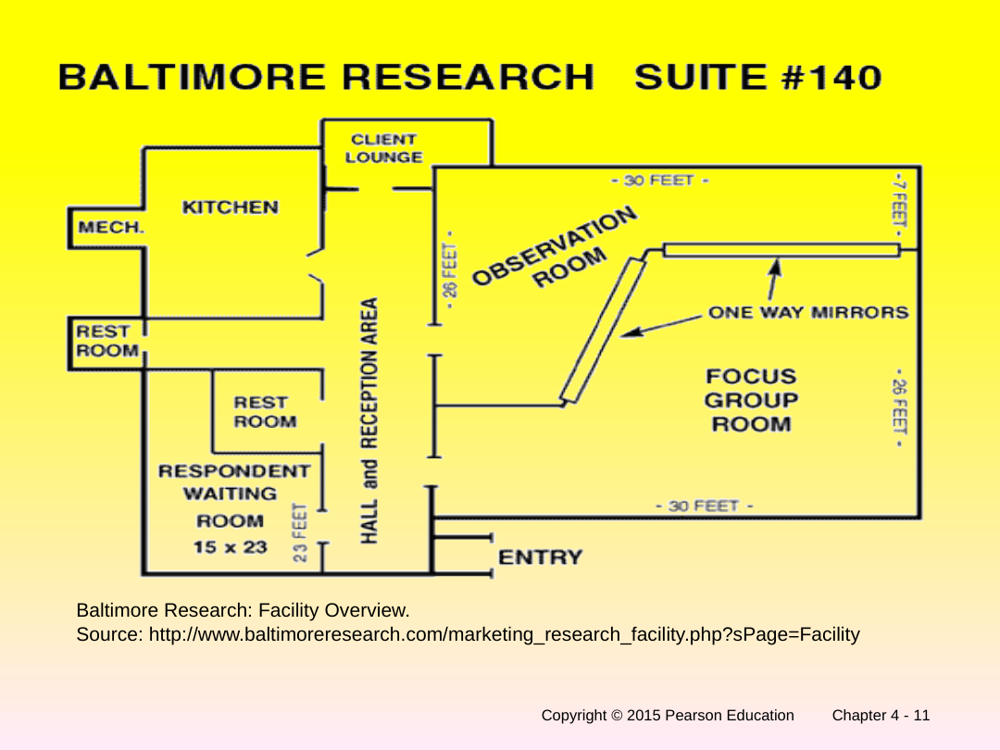
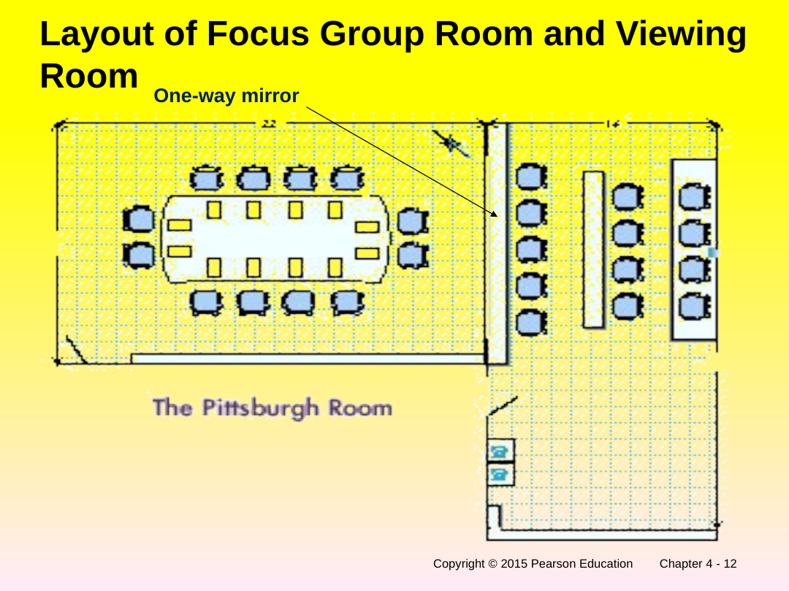
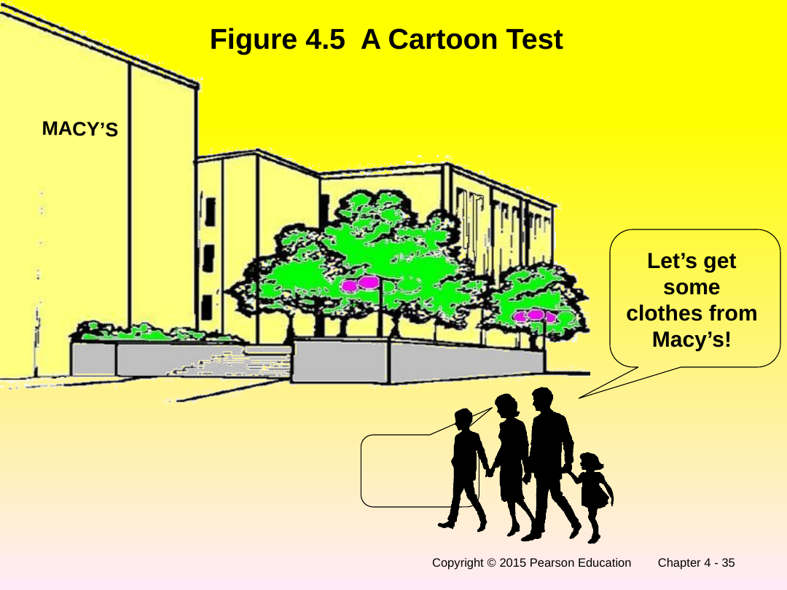
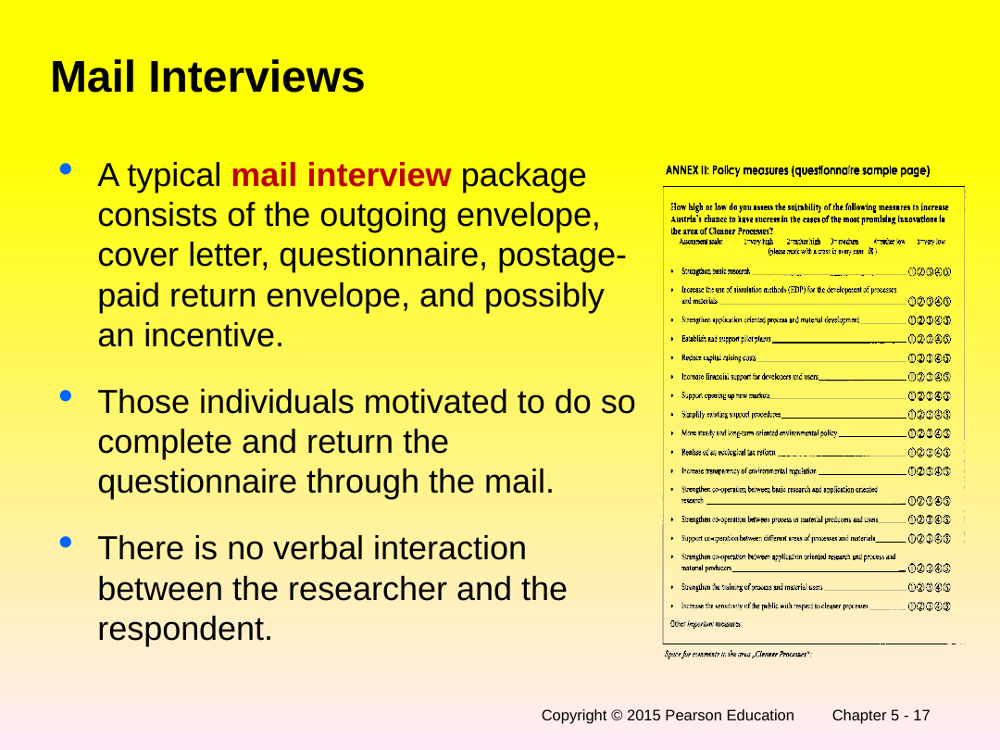
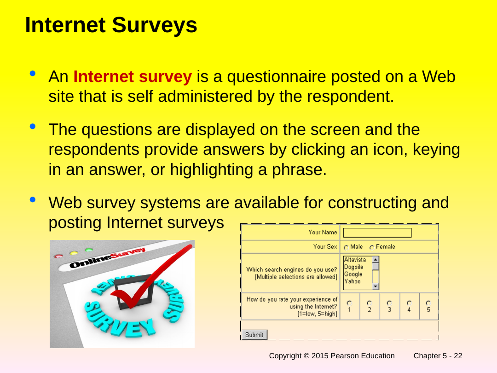

Chapter 1 — Introduction to Marketing Research
Built from deck "malhotra 01_essentials 1E.pptx", 16 slides, read visually. [Slide: ch1 s.1]
💡 In Plain English — Chapter 1, told as one story
Running example (used across all three chapters): Layla owns "Mango Fresh," a small smoothie shop. Lately her sales have slipped and she doesn't know why. Should she change prices? Open a second branch? Run ads? She is about to discover that guessing is expensive, and that there is a disciplined way to get answers. That disciplined way is marketing research.
1. What is marketing research, really?
Marketing research is just a careful, honest way of collecting and using information to make better business decisions. Instead of Layla trusting her gut ("I feel like prices are too high"), she gathers real facts, studies them, and lets the facts guide her. The textbook lists five verbs for what research does: it identifies what information is needed, collects it, analyses it, disseminates (shares) the findings, and then those findings get used to make a decision. Memorize the chain: Identify → Collect → Analyse → Share → Use.
2. Two reasons a business ever does research (building on #1)
Once Layla accepts that research helps, there are exactly two situations she might be in. Either something is wrong and she doesn't even know what ("sales are down, but why?") — that is problem-identification research, the detective work that finds hidden problems. Or she already knows the problem and needs to fix it ("I know I must re-price the mango smoothie, how should I?") — that is problem-solving research, the repair work. Identification finds the problem; solving fixes it.
3. Problem-solving research lives inside the "4 Ps" (building on #2)
When Layla moves to fixing things, her choices fall into four buckets that marketers call the 4 Ps: Product, Price, Promotion, and Place (distribution), and you add Segmentation (which customers to target) on top. So "solving research" might mean studying her menu (product), her prices, her advertising (promotion), or where/how she sells (place). Every fix she could make is really a question about one of these.
4. There is a fixed six-step recipe for any research project (building on #3)
Whatever the question, professionals follow the same six steps in order, like a recipe: (1) define the problem, (2) develop an approach, (3) design the research, (4) collect the data, (5) analyse it, (6) write the report. Notice step 1 is "define the problem" — that is so important it gets all of Chapter 2. And step 3, "design the research," gets all of Chapter 3. So Chapters 1, 2 and 3 are really just zooming in on the front half of this one recipe.
5. Research sits in the middle of everything marketing does (building on #4)
Why does any of this matter? Because research is the bridge between Layla's customers (and the messy outside world she can't control: the economy, competitors, the law) and the decisions she can control (her 4 Ps). Research feeds her decision-making with facts so her controllable choices actually fit the uncontrollable world. It assesses what she needs to know, and then provides it.
6. Layla doesn't have to do it all herself — there is an industry (building on #5)
Finally, research can be done internally (Layla and her staff) or bought from external firms. Big external firms come in two flavours: full-service (they do the whole project) and limited-service (they do one piece, like running the field interviews). There is a whole global industry of these companies — Nielsen, Kantar, Ipsos and so on — earning billions. Layla is a tiny customer of a giant ecosystem.
How Chapter 1 connects together:
Layla learns that research (Identify→Collect→Analyse→Share→Use) is done either to find a hidden problem or to solve a known one; that solving lives inside the 4 Ps; that every project follows the same six-step recipe; that research is the bridge between her uncontrollable world and her controllable decisions; and that she can do it herself or hire one of many specialist firms. Chapter 2 now zooms into step 1 (defining the problem) and Chapter 3 into step 3 (designing the research).
In one sentence
Marketing research is the systematic, objective process of identifying, collecting, analysing, disseminating, and using information to make better marketing decisions — done either to identify hidden problems or to solve known ones, following a fixed six-step process, and supplied by an internal team or an external industry. [Slide: ch1 s.2] [Slide: ch1 s.10]
In plain language
This chapter answers four beginner questions: What is marketing research? What kinds are there? How is a project actually run, step by step? And who in the world does this work? It does not yet teach you how to do any single step — that is what later chapters are for. Think of Chapter 1 as the map you look at before the journey: it shows the whole territory so the detailed chapters make sense.
Core concepts
1. What marketing research is
The deck gives a formal, deliberately precise definition. It is worth knowing the exact wording because the five verbs in the middle are frequently tested.
Marketing Research is the systematic and objective identification, collection, analysis, dissemination, and use of information, for the purpose of improving decision making related to the identification and solution of problems and opportunities in marketing. [Slide: ch1 s.2]
Two words in that definition do a lot of work. Systematic means the research is planned and orderly, not random poking around. Objective means it is unbiased — you collect the data honestly even if the answer is not the one you were hoping for. The five activities form a pipeline, and the slide draws them as a downward staircase: information needed → collection of data → analysis of data → dissemination of information → use of information. [Slide: ch1 s.3]
Recreation of Figure 1.1, "Defining Marketing Research." The slide pairs this staircase with a side caption, "Identifying and Solving Marketing Problems," signalling that the whole pipeline exists to do those two things. [Slide: ch1 s.3]
A closely related slide, simply titled "Market Research," restates the same idea as the researcher's four duties: marketing research specifies the information needed to address the issues, manages and implements the data-collection process, analyses the results, and communicates the findings and their implications. [Slide: ch1 s.4] Notice this is the same pipeline seen from the researcher's chair rather than the activity's.
2. Two big jobs: problem-identification vs problem-solving research
The single most testable distinction in the chapter. All marketing research splits into two classes depending on why you are doing it.
Problem-Identification Research: research undertaken to help identify problems which are not necessarily apparent on the surface and yet exist or are likely to arise in the future. Examples: market potential, market share, image, market characteristics, sales analysis, forecasting, and trends research. [Slide: ch1 s.5]
Problem-Solving Research: research undertaken to help solve specific marketing problems. Examples: segmentation, product, pricing, promotion, and distribution research. [Slide: ch1 s.5]
In plain terms: identification research is the smoke detector — it tells you there is a fire (or soon will be) even when you can't see flames. Solving research is the firefighter — once you know what is burning, it tells you how to put it out. Layla's "my sales are down but I don't know why" is identification; her later "I've decided to re-price, now how exactly?" is solving.

Problem-Identification Research
(Identify Underlying Problems)
- Market Potential Research
- Market Share Research
- Image Research
- Market Characteristics Research
- Forecasting Research
- Business Trends Research
Problem-Solving Research
(Address Identified Problems)
- Segmentation Research
- Product Research
- Pricing Research
- Promotion Research
- Distribution Research
Both branches descend from a single "Marketing Research" node at the top, and an arrow runs from the identification branch to the solving branch — you usually identify first, then solve. [Slide: ch1 s.6]
3. Problem-solving research, broken into the 4 Ps
The deck spends three slides drilling into the five sub-types of problem-solving research. These map onto the marketing mix (the "4 Ps": Product, Price, Promotion, Place/Distribution) plus Segmentation.
| Sub-type | What it studies (from the slides) |
|---|---|
| Segmentation Research | Determine the basis of segmentation; establish market potential and responsiveness for various segments; select target markets; create lifestyle profiles (demography, media, and product-image characteristics). [Slide: ch1 s.7] |
| Product Research | Test concept; determine optimal product design; package tests; product modification; brand positioning and repositioning; test marketing; control score tests. [Slide: ch1 s.7] |
| Pricing Research | Pricing policies; importance of price in brand selection; product-line pricing; price elasticity of demand; initiating and responding to price changes. [Slide: ch1 s.8] |
| Promotional Research | Optimal promotional budget; sales-promotion relationship; optimal promotional mix; copy decisions; media decisions; creative advertising testing; evaluation of advertising effectiveness; claim substantiation. [Slide: ch1 s.8] |
| Distribution Research | Determines types of distribution, attitudes of channel members, intensity of wholesale & resale coverage, channel margins, and location of retail and wholesale outlets. [Slide: ch1 s.9] |
Each slide carries a real-world callout box, and these are gold for remembering the concept:
So when Layla finally decides to act on her smoothie problem, whatever she does is one of these five: re-targeting customers (segmentation), reworking the menu (product), changing prices (pricing), advertising differently (promotion), or changing where/how she sells (distribution).
4. The six-step marketing research process
This is the backbone of the entire course. Every later chapter is "here is how to do step N well." Memorise the six steps in order.
Recreation of Figure 1.3, "The Marketing Research Process." [Slide: ch1 s.10]
Step 3 (Formulating a Research Design) is itself a bundle of eight tasks, which the slide "enlarges" on the next page. These eight reappear as the table of contents for the rest of the book:
| # | Step-3 sub-task |
|---|---|
| 1 | Secondary & Syndicated Data Analysis |
| 2 | Qualitative Research |
| 3 | Survey & Observation Research |
| 4 | Experimental Research |
| 5 | Measurement & Scaling |
| 6 | Questionnaire & Form Design |
| 7 | Sampling Process & Sample Size |
| 8 | Preliminary Plan of Data Analysis |
The "Step 3 enlarged" slide lists all eight sub-tasks inside a single box. [Slide: ch1 s.11]
A separate concept-map slide (Figure 1.9) redraws the whole six-step process as a flowchart and adds that after the report and follow-up, the project may "begin a new cycle" or "lead to another project" — research is a loop, not a one-shot. [Slide: ch1 s.16]
5. The role of research inside marketing
Figure 1.4 places marketing research at the centre of a wheel. On the outside sit things the manager cannot control and things she can; research is the hub that connects them by feeding the decision.

Reading the figure in words: Marketing Research sits in the middle and links three outer groups to Marketing Decision Making:
- Customer Groups — consumers, employees, channel members, suppliers. [Slide: ch1 s.12]
- Uncontrollable Environmental Factors — economy, technology, competition, laws and regulations, social and cultural factors, political factors. (These are the world Layla cannot change.) [Slide: ch1 s.12]
- Controllable Marketing Variables — segmentation, product, pricing, promotion, distribution. (These are Layla's levers — the same 4 Ps + segmentation from section 3.) [Slide: ch1 s.12]
Research plays two roles in the loop: assessing information needs and providing information, and the marketing managers then use it for market segmentation, target-market selection, marketing programs, and performance & control. [Slide: ch1 s.12] The takeaway: research is not a side activity, it is the information engine in the middle of every marketing decision.
6. The marketing research industry: who supplies it
Research is either produced internally (by a department inside the company) or bought from external suppliers, and the external world divides into full-service and limited-service firms.

Internal suppliers
A research function inside the company itself.
External · Full-service
- Syndicated services
- Standardized services
- Customized services
- Internet services
External · Limited-service
- Field services
- Focus groups & qualitative services
- Technical & analytical services
- Other services
The supplier list is given on Figure 1.5 (the tree) and restated on the "Marketing Research Suppliers & Services" slide, which adds a callout: "Burke is well known for its customized services." [Slide: ch1 s.13] [Slide: ch1 s.14]
Finally, Table 1.1 lists the ten largest research organisations in the world. The revenue column is worth seeing as a chart, because the drop-off from Nielsen to the rest is dramatic.
Full Table 1.1 — Top 10 Global Research Organizations (all cells)
| Rank 2012 | Rank 2011 | Organization | Headquarters | Parent country | Website | No. of countries with subsidiaries / branch offices | Global revenue (USD m) | % of global revenue from outside home country |
|---|---|---|---|---|---|---|---|---|
| 1 | 1 | Nielsen Holdings | New York | U.S. | Nielsen.com | 100 | 5,429.0 | 51.2 |
| 2 | 2 | Kantar | London & Fairfield, Conn. | U.K. | Kantar.com | 80 | 3,338.6 | 72.2 |
| 3 | 3 | Ipsos Group SA | Paris | France | Ipsos.com | 85 | 2,301.1 | 93.2 |
| 4 | 4 | GfK SE | Nuremberg | Germany | Gfk.com | 68 | 1,947.8 | 70.0 |
| 5 | 6 | IMS Health Inc. | Parsippany, N.J. | U.S. | Imshealth.com | 74 | 775.0 | 65.0 |
| 6 | 5 | Information Resources | Chicago | U.S. | IRIworldwide.com | 8 | 763.8 | 37.3 |
| 7 | 8 | INTAGE Inc. | Tokyo | Japan | Intage.co.jp | 7 | 500.3 | 2.6 |
| 8 | 7 | Westat Inc. | Rockville, Md. | U.S. | Westat.com | 8 | 495.9 | 1.0 |
| 9 | 9 | Arbitron Inc. | Columbia, VA | U.S. | Arbitron.com | 3 | 449.9 | 1.3 |
| 10 | 10 | The NPD Group | Port Washington, N.Y. | U.S. | NPD.com | 13 | 272.0 | 29.5 |
Every cell reproduced verbatim from Table 1.1. [Slide: ch1 s.15]
Common confusions
| Concept A | Concept B | Key difference |
|---|---|---|
| Problem-identification research | Problem-solving research | Identification finds a problem that is not obvious (market potential, share, forecasting, trends); solving fixes a known problem (segmentation, product, price, promotion, distribution). [Slide: ch1 s.5] |
| Uncontrollable environmental factors | Controllable marketing variables | Uncontrollable = economy, technology, competition, laws, social/cultural, political. Controllable = the marketing mix (segmentation, product, price, promotion, distribution). Research links the two. [Slide: ch1 s.12] |
| Full-service supplier | Limited-service supplier | Full-service firms can run the whole project (syndicated, standardized, customized, internet). Limited-service firms do one slice (field, qualitative, analytical, other). [Slide: ch1 s.14] |
| "Marketing research" | "Market research" | The slides use them almost interchangeably, but "marketing research" is the broad discipline (all marketing decisions) while "market research" colloquially leans toward studying a specific market. The formal definition is for marketing research. [Slide: ch1 s.2] [Slide: ch1 s.4] |
Exam practice
Q1 (definition recall). List, in order, the five activities in the formal definition of marketing research.
Q2 (classification). A firm wants to know whether its brand image is quietly eroding before it shows up in sales. Is this problem-identification or problem-solving research?
Q3 (matching). Which sub-type of problem-solving research covers "price elasticity of demand" and "initiating and responding to price changes"?
Q4 (process). Name the six steps of the marketing research process in order.
Q5 (industry). Nielsen is the world's largest research organisation by revenue. Roughly how much larger was its 2012 global revenue than the #2 firm, Kantar?
Q6 (true/false). "Marketing research is only used to solve problems that already exist." True or false?
Slide coverage audit — Chapter 1
| Slide | Banner / title | Portal section |
|---|---|---|
| 1 | Chapter 1 title — Introduction to Marketing Research | Chapter header |
| 2 | Definition of Marketing Research | §1 (verbatim definition) |
| 3 | Figure 1.1 Defining Marketing Research | §1 (staircase flow) |
| 4 | Market Research (researcher's four duties) | §1 |
| 5 | Classification of Marketing Research | §2 (both verbatim definitions) |
| 6 | Figure 1.2 A Classification of Marketing Research | §2 (branch diagram) |
| 7 | Problem-Solving Research (Segmentation, Product) | §3 (table rows) |
| 8 | Problem-Solving Research Cont. (Pricing, Promotional) | §3 (table rows + Unilever callout) |
| 9 | Problem-Solving Research Cont. (Distribution) | §3 (table row + Wal-Mart callout) |
| 10 | Figure 1.3 The Marketing Research Process | §4 (six-step flow) |
| 11 | Step 3 enlarged (8 sub-tasks) | §4 (eight-task table) |
| 12 | Figure 1.4 The Role of Marketing Research | §5 (figure + word breakdown) |
| 13 | Figure 1.5 Industry: Suppliers & Services | §6 (figure + branch cards) |
| 14 | Marketing Research Suppliers & Services | §6 (Burke callout) |
| 15 | Table 1.1 Top 10 Global Research Organizations | §6 (chart + full table) |
| 16 | Figure 1.9 Concept Map for the MR Process | §4 (loop / new-cycle note) |
Chapter 2 — Defining the Marketing Research Problem & Developing an Approach
Built from deck "malhotra 02_essentials 1E.pptx", 31 slides, read visually. [Slide: ch2 s.1]
💡 In Plain English — Chapter 2, told as one story
Running example (continued): Layla's sales at Mango Fresh are down. In Chapter 1 she learned there is a six-step recipe. This chapter is all about step 1 — and it turns out "defining the problem" is the hardest and most important step of the whole project. Get it wrong and every later step, however well executed, answers the wrong question.
1. Symptom is not the same as cause
Layla's first instinct is "my problem is that sales are down." But falling sales is a symptom, like a fever. The real cause could be anything: a new competitor, a tired menu, bad weather, a price that feels too high. If she researches the symptom ("how do I boost this month's sales?") she'll get a band-aid. The whole chapter exists to push her from the symptom to the underlying cause.
2. How do you dig from symptom to cause? Four tasks (building on #1)
To define the problem properly, you do four things: talk to the decision-makers (here, Layla herself and her manager), interview industry experts (a smoothie-industry veteran, a supplier), analyse secondary data (existing reports, her own past sales records), and run a little qualitative research (chat with a few customers). Together these reveal the environmental context — everything going on around the problem.
3. A structured way to interrogate the problem: the problem audit and the seven Cs (building on #2)
A problem audit is a thorough interview with the decision-maker that walks through the history of the problem, the options available, how each will be judged, and how the answer will actually be used. And because all of this depends on the researcher and the manager getting along, the book lists seven Cs of a healthy researcher–manager relationship (Communication, Cooperation, Confidence, Candor, Closeness, Continuity, Creativity). If Layla hires a researcher who never really listens to her, the project is doomed before it starts.
4. Don't forget the world around the problem: PROBLEM (building on #3)
Before defining anything, the researcher scans the environmental context, summarised by the acronym PROBLEM: Past information, Resources/constraints, Objectives of the decision-maker, Buyer behaviour, Legal environment, Economic environment, Marketing & technological skills. For Layla: what do past sales show? what's her budget? what does she actually want? how do smoothie buyers behave? any regulations? the local economy? her own marketing know-how?
5. The single most important distinction in the chapter: two kinds of "problem" (building on #4)
Now the key idea. There are two problems hiding inside every project. The Management Decision Problem (MDP) asks what the decision-maker needs to do — it is action-oriented ("Should Layla lower her prices?"). The Marketing Research Problem (MRP) asks what information is needed and how to get it — it is information-oriented ("Determine the price elasticity of demand for Mango Fresh smoothies"). The MDP focuses on symptoms; the MRP focuses on underlying causes. Translating the MDP into a good MRP is the core skill of this chapter.
6. Define the MRP at two levels: broad then specific (building on #5)
A good marketing research problem is stated twice: once as a broad statement (general, gives perspective) and then broken into specific components (the exact sub-questions to research). Too broad and you have no guidance; too narrow and you miss things. It's like Goldilocks — you want it just right.
7. Once defined, you "develop an approach" (building on #6)
Step 2 of the recipe. Having defined what to research, Layla's researcher now decides how to think about it: build an analytical framework and models (a theory of what drives smoothie sales), turn the components into research questions (refined sub-questions) and hypotheses (educated guesses at the answers, to be tested), and finally write down the specification of information needed for each component. Now, and only now, is she ready for Chapter 3, where she designs the actual study.
How Chapter 2 connects together:
Layla moves from a symptom (sales down) to a properly defined problem by doing four tasks, auditing the problem, and scanning the PROBLEM context; she separates the action-oriented Management Decision Problem from the information-oriented Marketing Research Problem; she states that research problem broadly and then in specific components; and finally she develops an approach (framework → models → research questions → hypotheses → information needed). That hand-off — a defined problem plus an approach — is exactly the input Chapter 3 needs to design the study.
In one sentence
Before any data is collected you must convert a vague management symptom into a precisely defined, information-oriented marketing research problem — stated broadly and then in specific components — and wrap it in an "approach" of frameworks, models, research questions, and hypotheses. [Slide: ch2 s.13] [Slide: ch2 s.17]
In plain language
Chapter 1 said step 1 of the process is "define the problem." This chapter is the entire how-to for that step (plus step 2, "develop an approach"). Its big warning is that beginners define the symptom instead of the cause, and its big tool is the split between the management decision problem (what to do) and the marketing research problem (what to find out). Almost everything else hangs off that one distinction.
Core concepts
1. Where this chapter sits in the process
The deck opens by replaying the six-step process from Chapter 1 and putting an arrow next to Step 1 (Defining the Problem) and Step 2 (Developing an Approach) — the two steps this chapter owns. [Slide: ch2 s.2] Step 3 and beyond stay greyed out for later chapters. [Slide: ch2 s.3]
Figure 2.2 then gives the master map for the chapter, which is worth holding in your head as you read:

In words, the figure stacks five layers, each feeding the one below:
Every box and arrow above is reproduced from Figure 2.2. [Slide: ch2 s.4]
2. The tasks that define a problem
Four tasks turn a vague worry into a defined problem. The deck bolds the source of each.
| Task | What it is |
|---|---|
| Discussions with Decision Makers | The problem definition begins here. You sit with the people who will act on the research. [Slide: ch2 s.5] |
| Interviews with Industry Experts | People who know the industry but are outside the immediate decision. [Slide: ch2 s.5] |
| Secondary Data Analysis | Information that already exists (covered in depth in Chapter 3). [Slide: ch2 s.5] |
| Qualitative Research | Small-scale, open-ended exploration like focus groups (covered in Chapter 4). [Slide: ch2 s.5] |
3. The problem audit and the seven Cs
The problem audit is a structured, comprehensive interview with the decision-maker, defined on the slide:
The problem audit is a comprehensive examination of a marketing problem with the purpose of understanding its origin and nature. [Slide: ch2 s.6]
It works through seven issues. Reproduced exactly, the audit asks about:
- The events that led to the decision that action is needed; the history of the problem. [Slide: ch2 s.6]
- The alternative courses of action available to the decision-maker (DM). [Slide: ch2 s.6]
- The criteria that will be used to evaluate the alternative courses of action. [Slide: ch2 s.6]
- The potential actions that are likely to be suggested based on the research findings. [Slide: ch2 s.6]
- The information that is needed to answer the DM's questions. [Slide: ch2 s.7]
- The manner in which the DM will use each item of information in making the decision. [Slide: ch2 s.7]
- The corporate culture as it relates to decision making. [Slide: ch2 s.7]
The same seven appear redrawn as a vertical flow on the "Conducting a Problem Audit" slide (History of the Problem → Alternative Courses of Action → Criteria for Evaluating → Nature of Potential Actions → Information Needed → How Each Item Will Be Used → Corporate Decision-Making Culture). [Slide: ch2 s.9]
Because the audit depends on a good working relationship, the deck lists the Seven Cs of Interaction between the decision-maker and researcher:
4. Environmental context — the PROBLEM acronym
Before defining the problem you study the environment around it. Figure 2.4 lists seven factors, and a later slide packages them into the acronym PROBLEM.
Recreation of Figure 2.4, "Factors to be Considered in the Environment Context of the Problem." [Slide: ch2 s.12]
5. Management decision problem vs marketing research problem ⭐
This is the heart of the chapter and the most exam-heavy idea in it. Read it twice.
| Management Decision Problem (MDP) | Marketing Research Problem (MRP) |
|---|---|
| Asks what the decision maker needs to do | Asks what information is needed and how it should be obtained |
| Action oriented | Information oriented |
| Focuses on symptoms | Focuses on the underlying causes |
Reproduced verbatim from Table 2.2. [Slide: ch2 s.13]
Worked examples from Table 2.3 — notice how each "should we…?" (action) becomes a "determine…" (information):
| Management Decision Problem | Corresponding Marketing Research Problem |
|---|---|
| Should a new product be introduced? | To determine consumer preferences and purchase intentions for the proposed new product. [Slide: ch2 s.14] |
| Should the advertising campaign be changed? | To determine the effectiveness of the current advertising campaign. [Slide: ch2 s.14] |
| Should the price of the brand be increased? | To determine the price elasticity of demand and the impact on sales and profits of various levels of price changes. [Slide: ch2 s.14] |
| Should Harley-Davidson invest to produce more motorcycles? | To determine if customers would be loyal buyers of Harley-Davidson in the long term. [Slide: ch2 s.15] |
Why the distinction matters so much: defining by symptoms can be dangerously misleading. Table 2.1 gives two cautionary cases — what customers say is not the real cause.
| Firm | Symptom | Definition based on symptom (wrong focus) | Definition based on underlying cause (right focus) |
|---|---|---|---|
| Manufacturer of orange soft drinks | Consumers say the sugar content is too high | Determine consumer preferences for alternative levels of sugar content | Color. The color of the drink is a dark shade of orange, giving the perception that the product is too "sugary." [Slide: ch2 s.11] |
| Manufacturer of machine tools | Customers complain prices are too high | Determine the price elasticity of demand | Channel management. Distributors do not have adequate product knowledge to communicate product benefits to customers. [Slide: ch2 s.11] |
The deck also retells this as a conversation: the decision-maker focuses on the symptom ("loss of market share") while the researcher probes underlying causes (superior promotion by competition, inadequate distribution, lower product quality, price undercutting). [Slide: ch2 s.10]
Source quotes for the symptom-vs-cause discussion (Figure 2.3)
- Focus of the DM — Symptoms: "Loss of Market Share." [Slide: ch2 s.10]
- Focus of the Researcher — Underlying Causes: "Superior Promotion by Competition · Inadequate Distribution of Company's Products · Lower Product Quality · Price Undercutting by a Major Competitor." [Slide: ch2 s.10]
- Slide note: "After the recession of 2008–2010, many consumers have become price and value conscious leading to a loss of market share for prestigious department stores." [Slide: ch2 s.10]
Figure 2.7 ties the symptoms / causes / MDP / MRP relationships into one picture: underlying causes create symptoms, symptoms drive the management decision problem, which leads to the marketing research problem, which is expressed as a broad statement and specific components. [Slide: ch2 s.18]
6. Defining the problem: broad statement + specific components
A properly defined marketing research problem is stated at two levels. Figure 2.6 shows the marketing research problem flowing down into a broad statement and then into specific components (Component 1, 2, 3 …).
Recreation of Figure 2.6, "Proper Definition of the Marketing Research Problem." [Slide: ch2 s.17]
The danger is defining it at the wrong width. Figure 2.5 names the two errors:
Problem Definition is Too Broad
- Does not provide guidelines for subsequent steps
- e.g., "Improving the company's image"
Problem Definition is Too Narrow
- May miss important components of the problem
- e.g., changing prices in response to a competitor's price change (when the real issue may be wider)
Reproduced from Figure 2.5, "Errors in Defining the Market Research Problem." [Slide: ch2 s.16]
The book's running case is Harley-Davidson:
Management Decision Problem: Should Harley-Davidson invest to produce more motorcycles?
Marketing Research Problem (Broad Statement): To determine if customers would be loyal buyers of Harley-Davidson in the long term. [Slide: ch2 s.19]
Broken into specific components: (1) Who are the customers — their demographic and psychographic (lifestyle) characteristics? (2) Can different types of customers be distinguished — is meaningful segmentation possible? (3) How do customers feel about their Harleys — are all motivated by the same appeal? (4) Are customers loyal to Harley-Davidson — what is the extent of brand loyalty? [Slide: ch2 s.20]
7. Developing an approach: framework, models, research questions, hypotheses
With the problem defined, Step 2 builds the "approach." The deck lists three components:
- Analytical Framework and Model
- Research Questions and Hypotheses
- Specification of the Information Needed [Slide: ch2 s.21]
Models. An analytical model is a set of variables and their interrelationships designed to represent, in whole or in part, some real system or process. [Slide: ch2 s.22] Models come in different forms; the deck highlights graphical models, which are visual and used to isolate variables and suggest directions of relationships but are not designed to provide numerical results. [Slide: ch2 s.23] Its example is a consumer-response chain:
Graphical-model example from the "Graphical Models" slide. [Slide: ch2 s.23]
Research questions and hypotheses. The definitions to memorise:
Research questions (RQs) are refined statements of the specific components of the problem. [Slide: ch2 s.25]
A hypothesis (H) is an unproven statement or proposition about a factor or phenomenon that is of interest to the researcher. Often, a hypothesis is a possible answer to the research question. [Slide: ch2 s.25]
Figure 2.8 shows the flow: the components of the marketing research problem become research questions, which become hypotheses — and the analytical framework and models feeds into both the research questions and the hypotheses. [Slide: ch2 s.24]
The Harley-Davidson example again makes it concrete:
RQ: Can the motorcycle buyers be segmented based on psychographic characteristics?
H1: There are distinct segments of motorcycle buyers.
H2: Each segment is motivated to own a Harley for a different reason.
H3: Brand loyalty is high among Harley-Davidson customers in all segments. [Slide: ch2 s.26]
Specification of information needed. By focusing on each component of the problem and the framework, models, research questions, and hypotheses, the researcher can determine exactly what information should be obtained. [Slide: ch2 s.27] Figure 2.9 lays this out as four parallel columns — for each component of the problem you derive its RQs, then its hypotheses, then the info needed:
Recreation of Figure 2.9, "Specification of Information Needed" (the slide draws these as four side-by-side columns, each split per component 1…n). [Slide: ch2 s.28]
Two concept-map slides (Figures 2.11 and 2.12) summarise the whole chapter. They are visually dense, so they are embedded here with a word summary beneath each.


Common confusions
| Concept A | Concept B | Key difference |
|---|---|---|
| Management Decision Problem | Marketing Research Problem | MDP = what to do, action-oriented, on symptoms ("Should we raise price?"). MRP = what to find out, information-oriented, on causes ("Determine price elasticity of demand"). [Slide: ch2 s.13] |
| Symptom | Underlying cause | Falling market share is a symptom; the cause may be competitor promotion, poor distribution, quality, or price undercutting. Defining research on the symptom misleads. [Slide: ch2 s.10] [Slide: ch2 s.11] |
| Definition too broad | Definition too narrow | Too broad = no guidance for next steps ("improve the image"). Too narrow = misses important components. Aim for a broad statement + specific components. [Slide: ch2 s.16] |
| Research question (RQ) | Hypothesis (H) | An RQ is a refined statement of a component of the problem; a hypothesis is an unproven proposition and is often a possible answer to that RQ. [Slide: ch2 s.25] |
| Analytical framework / model | Graphical model | A model is variables + their interrelationships representing a real system; a graphical model is the visual kind — shows direction of relationships but gives no numbers. [Slide: ch2 s.22] [Slide: ch2 s.23] |
Exam practice
Q1 (the core skill). A manager asks, "Should we lower the price of our brand?" State the corresponding marketing research problem.
Q2 (symptom vs cause). Customers of a soft-drink maker say the sugar content is too high. Research found the real driver was something else — what?
Q3 (acronym). What does the PROBLEM acronym stand for, and what is it used for?
Q4 (definitions). Define a "hypothesis" and explain its relationship to a research question.
Q5 (seven Cs). The relationship between the decision maker and researcher should show the "seven Cs." Name them.
Q6 (structure). Why must a marketing research problem be stated as both a broad statement and specific components?
Slide coverage audit — Chapter 2
| Slide | Banner / title | Portal section |
|---|---|---|
| 1 | Chapter 2 title | Chapter header |
| 2 | Figure 2.1 Relationship of this chapter to the MR process | §1 |
| 3 | Step 3 enlarged (research-design sub-tasks) | §1 (context, full list in Ch.1 §4) |
| 4 | Figure 2.2 Problem Definition & Approach Process | §1 (figure + flow recreation) |
| 5 | Tasks Involved in Problem Definition | §2 (table + callout) |
| 6 | The Problem Audit (issues 1–4) | §3 |
| 7 | The Problem Audit Cont. (issues 5–7) | §3 |
| 8 | The Seven Cs of Interaction | §3 (mnemonic + Nielsen callout) |
| 9 | Conducting a Problem Audit (vertical flow) | §3 |
| 10 | Figure 2.3 Discussion Between Researcher and DM | §5 (symptom vs cause + deck-quotes) |
| 11 | Table 2.1 Problem Def. based on symptoms misleading | §5 (4-column table) |
| 12 | Figure 2.4 Environmental context factors | §4 (flow recreation) |
| 13 | Table 2.2 MDP vs MRP | §5 (verbatim table) |
| 14 | Table 2.3 MDP and corresponding MRP | §5 (examples table) |
| 15 | Table 2.3 Cont. (Harley-Davidson) | §5 (examples table row) |
| 16 | Figure 2.5 Errors in defining the problem | §6 (too broad / too narrow cards) |
| 17 | Figure 2.6 Proper definition of the MRP | §6 (flow recreation) |
| 18 | Figure 2.7 MDP and MRP | §5 (causes→symptoms→MDP→MRP) |
| 19 | Harley-Davidson Example (broad statement) | §6 (callout) |
| 20 | Harley-Davidson: Specific Components | §6 |
| 21 | Components of an Approach | §7 |
| 22 | Models (analytical model definition) | §7 (verbatim) |
| 23 | Graphical Models | §7 (Awareness→Patronage flow) |
| 24 | Figure 2.8 Development of RQs & Hypothesis | §7 |
| 25 | Research Questions and Hypotheses | §7 (verbatim definitions) |
| 26 | Harley-Davidson Example (RQ, H1–H3) | §7 (callout) |
| 27 | Specification of Information Needed | §7 |
| 28 | Figure 2.9 Specification of Information Needed | §7 (four-column flow) |
| 29 | Figure 2.11 Concept Map for Problem Definition | §7 (embedded + word summary) |
| 30 | Figure 2.12 Concept Map for Approach to the Problem | §7 (embedded + word summary) |
| 31 | Acronym: PROBLEM | §4 (mnemonic) |
Chapter 3 — Research Design, Secondary & Syndicated Data
Built from deck "malhotra 03_essentials 1E.pptx", 51 slides, read visually. [Slide: ch3 s.1]
💡 In Plain English — Chapter 3, told as one story
Running example (continued): Layla has now defined her problem properly (Chapter 2): she wants to know whether Mango Fresh's prices are driving customers away, and who her loyal customers really are. This chapter is step 3 of the recipe — designing the actual study — plus a deep dive into the cheapest place to start looking: data that already exists.
1. A research design is a blueprint
A research design is just a plan for the whole study, the way an architect's blueprint is a plan for a house. Before Layla collects a single survey, she needs a blueprint saying what kind of study, what data, what sample, how she'll analyse it. Build the house without a blueprint and you get an expensive mess.
2. There are two big families of design (building on #1)
Designs split into exploratory and conclusive. Exploratory is loose, flexible "let me just get a feel for this" research — used when Layla isn't even sure what's going on. Conclusive is formal, structured "let me test something specific" research — used when she has a clear question. Conclusive then splits again into descriptive (describe what is happening) and causal (find out what causes what). So the family tree is: Research Design → Exploratory or Conclusive; Conclusive → Descriptive or Causal.
3. Exploratory comes first, then you narrow down (building on #2)
Usually Layla starts exploratory ("why might sales be down?") to generate ideas and hypotheses, then moves to conclusive ("test whether price is the cause") to confirm them. Exploratory gives insights and understanding; conclusive tests hypotheses and examines relationships.
4. Descriptive research can be a snapshot or a movie (building on #3)
If Layla picks descriptive, she chooses between cross-sectional (survey a sample once — a snapshot) and longitudinal (survey the same sample repeatedly over time — a movie). A snapshot tells her what's true today; a movie tells her how things are changing.
5. Causal research means experiments (building on #4)
If Layla needs to prove that lowering the price actually causes more sales (not just that they happen together), she needs causal research, whose main method is the experiment: change one thing, hold everything else steady, see what happens. Descriptive shows association (X and Y move together); causal shows cause and effect (X causes Y).
6. Whatever the design, always start with data that already exists (building on #5)
Here's the money-saving lesson. Primary data is data Layla collects fresh for her problem (expensive, slow). Secondary data is data someone already collected for some other purpose (cheap, fast). Rule: always exhaust secondary data first. Her own past sales records, government statistics, industry reports — all might answer part of her question for almost nothing before she spends money on a survey.
7. But secondary data was made for someone else, so judge it carefully (building on #6)
Because secondary data wasn't made for Layla, she must check it. The book gives the acronym SECOND: Specifications (how was it collected?), Error (how accurate?), Currency (how old?), Objective (why was it collected?), Nature (what's actually in it?), Dependability (can you trust the source?). Secondary data is internal (inside her business) or external (government, business sources, or syndicated firms).
8. Syndicated services: data collected once and sold to many (building on #7)
A special, powerful kind of external secondary data is syndicated services — firms that collect a big pool of standard data and sell it to many clients at once (so each pays little). They track households/consumers (via surveys, panels, supermarket scanners) and institutions (via audits of retailers and wholesalers). When data from several syndicated sources is fused into one integrated picture of a household, it's called single-source data. Layla could never afford to put scanners in every supermarket — but she can buy a slice of scanner data from a syndicated firm.
How Chapter 3 connects together:
A research design is the blueprint; it's exploratory (loose, idea-generating) or conclusive; conclusive is descriptive (snapshot = cross-sectional, movie = longitudinal) or causal (experiments, proving cause-and-effect). Whatever the design, Layla starts with cheap secondary data before expensive primary data, judges it with SECOND, and taps syndicated services (households via surveys/panels/scanners, institutions via audits) — fusing them into single-source data. Designed and armed with existing data, she's ready for the data-collection chapters (qualitative, surveys, experiments) that follow.
In one sentence
A research design is the blueprint for a study, classified into exploratory vs conclusive (and conclusive into descriptive vs causal), and the cheapest first move in any design is to mine existing secondary data — especially syndicated services — before collecting costly primary data. [Slide: ch3 s.5] [Slide: ch3 s.8] [Slide: ch3 s.21]
In plain language
This chapter does two jobs. First half: it teaches step 3 of the research process — choosing the type of study (the design). Second half: it teaches the single most cost-effective habit in research — using data that already exists (secondary and syndicated) before spending money to collect your own. If you remember only two trees from this chapter, remember the design tree (exploratory/conclusive → descriptive/causal) and the secondary-data tree (internal/external → syndicated).
Core concepts
1. What a research design is
The deck again replays the six-step process and marks Step 3 (Formulating a Research Design) as this chapter's focus, specifically its first sub-task, Secondary & Syndicated Data Analysis. [Slide: ch3 s.2] [Slide: ch3 s.3] Figure 3.2 reminds us that getting to a design is iterative — Steps 1, 2 and 3 loop back to one another. [Slide: ch3 s.4]
A research design is a framework or blueprint for conducting the marketing research project. It details the procedures necessary for obtaining the information needed to structure or solve marketing research problems. [Slide: ch3 s.5]
A research design has the same eight components as Step 3 in Chapter 1 (secondary/syndicated data, qualitative research, survey & observation, experimental research, measurement & scaling, questionnaire & form design, sampling process & sample size, plan of data analysis). [Slide: ch3 s.6] [Slide: ch3 s.7] These are summarised by the acronym DESIGN at the end of the chapter.
2. The big family tree of research designs
The master classification. Memorise this tree — almost every exam question on the chapter references it.

Exploratory Research Design
Loose, flexible, used to gain insight.
Conclusive Research Design
- Descriptive Research
- Cross-Sectional Design
- Longitudinal Design
- Causal Research
Word recreation of the Figure 3.3 tree. [Slide: ch3 s.8]
3. Exploratory vs conclusive research
Table 3.1 contrasts the two families across six rows. Reproduced in full:
| Exploratory | Conclusive | |
|---|---|---|
| Objective | To provide insights and understanding. | To test specific hypotheses and examine relationships. |
| Characteristics | Information needed is defined only loosely. Research process is flexible and unstructured. Sample is small and nonrepresentative. Data analysis is qualitative. | Information needed is clearly defined. Research process is formal and structured. Sample is large and representative. Data analysis is quantitative. |
| Findings | Tentative. | Conclusive. |
| Outcome | Generally followed by further exploratory or conclusive research. | Findings used as input into decision making. |
Reproduced from Table 3.1, "Differences Between Exploratory and Conclusive Research" (and its continuation slide). [Slide: ch3 s.9] [Slide: ch3 s.10]
Uses of exploratory research: formulate a problem or define it more precisely; identify alternative courses of action; develop hypotheses; isolate key variables and relationships for further examination; gain insights for developing an approach to the problem; establish priorities for further research. [Slide: ch3 s.11]
Methods of exploratory research: survey of experts (Ch.2), pilot surveys (Ch.2), secondary data analysis (Ch.3), and qualitative research (Ch.4). [Slide: ch3 s.12]
4. Descriptive research (cross-sectional vs longitudinal)
Descriptive research describes things. Its uses: describe the characteristics of relevant groups (consumers, salespeople, organizations, market areas); estimate the percentage of units in a population exhibiting a certain behavior; determine perceptions of product characteristics; determine the degree to which marketing variables are associated; and make specific predictions. [Slide: ch3 s.14]
Major types of descriptive studies: sales studies (market potential, market share, sales analysis), consumer perception & behavior studies (image, product usage, advertising, pricing), and market characteristic studies (distribution, competitive analysis). [Slide: ch3 s.13] Its methods: surveys (Ch.5), panels (Ch.3 and 5), and observational & other data (Ch.5). [Slide: ch3 s.15]
Descriptive research comes in two time-shapes. The definitions to memorise:
A cross-sectional design involves the collection of information from any given sample of population elements only once. [Slide: ch3 s.16]
In a longitudinal design, a fixed sample (or samples) of population elements is measured repeatedly on the same variables. A longitudinal design differs from a cross-sectional design in that the sample or samples remain the same over time. [Slide: ch3 s.16]
Cross-Sectional Design
Sample Surveyed at T1 — one snapshot, taken once.
Longitudinal Design
Sample Surveyed at T1 → the same sample also Surveyed at T2 — repeated over time.
Recreation of Figure 3.4, "Cross-Sectional vs. Longitudinal Designs." [Slide: ch3 s.17]
5. Causal research
Figure 3.5 splits conclusive research into descriptive and causal and names what each establishes: descriptive establishes association ("X and Y vary together"); causal establishes cause and effect ("X is a cause of Y"). [Slide: ch3 s.18]
Descriptive Research → Association
X and Y Vary Together
Causal Research → Cause and Effect
X is a Cause of Y
Recreation of Figure 3.5, "Descriptive versus Causal Research." [Slide: ch3 s.18]
Uses of causal research: to understand which variables are the cause (independent variables) and which are the effect (dependent variables) of a phenomenon; and to determine the nature of the relationship between the causal variables and the effect to be predicted. Its method is the experiment (Ch.6). [Slide: ch3 s.19]
Designs are not used in isolation. Figure 3.6's "Some Alternative Research Designs" slide shows three valid sequences: (a) exploratory → conclusive; (b) conclusive alone; (c) conclusive → exploratory (to help interpret results). [Slide: ch3 s.20]

6. Primary vs secondary data
The second half of the chapter pivots to data sources. Two definitions anchor everything:
Primary data are originated by a researcher for the specific purpose of addressing the problem at hand. The collection of primary data involves all six steps of the marketing research process. [Slide: ch3 s.21]
Secondary data are data which have already been collected for purposes other than the problem at hand. These data can be located quickly and inexpensively. [Slide: ch3 s.21]
Table 3.2 compares the two on four dimensions:
| Primary Data | Secondary Data | |
|---|---|---|
| Collection purpose | For the problem at hand | For other problems |
| Collection process | Very involved | Rapid and easy |
| Collection cost | High | Relatively low |
| Collection time | Long | Short |
Reproduced from Table 3.2, "A Comparison of Primary and Secondary Data." [Slide: ch3 s.22]
Uses of secondary data: identify the problem; better define the problem; develop an approach to the problem; formulate an appropriate research design (e.g. by identifying key variables); answer certain research questions and test some hypotheses; and interpret primary data more insightfully. [Slide: ch3 s.23]
7. Evaluating & classifying secondary data
Because secondary data was collected for someone else's purpose, you must evaluate it before trusting it. Six criteria, captured by the acronym SECOND:
| Criterion | Issues to check | Remarks / why it matters |
|---|---|---|
| Specifications / Methodology | Data collection method, response rate, quality, sampling technique, size, questionnaire design, field work, data analysis | Data should be reliable, valid, and generalizable to the problem at hand. [Slide: ch3 s.24] [Slide: ch3 s.25] |
| Error — accuracy | Examine errors in approach, research design, sampling, data collection, data analysis, reporting | Assess accuracy by comparing data from different sources. [Slide: ch3 s.25] |
| Currency — when collected | Time lag between collection and publication; frequency of updates | Census data are periodically updated by syndicated firms. [Slide: ch3 s.25] |
| Objective — why collected | Why were the data collected? | The objective will determine the relevance of the data. [Slide: ch3 s.26] |
| Nature — content | Definition of key variables, units of measurement, categories used, relationships examined | Reconfigure the data to increase their usefulness, if possible. [Slide: ch3 s.26] |
| Dependability | Expertise, credibility, reputation, and trustworthiness of the source | Data should be obtained from an original rather than an acquired source. [Slide: ch3 s.26] |
The six criteria appear on the "Criteria for Evaluating Secondary Data" slides; the SECOND acronym packages them. [Slide: ch3 s.24] [Slide: ch3 s.50]
Secondary data is then classified by where it comes from. Figure 3.6 splits it into internal and external sources:

Internal sources
- Customer Databases
- Data Warehousing & Data Mining
- CRM & Database Marketing
- Social Media
External sources
- Social Media
- Business / Nongovernment
- Government
- Syndicated Services
Word recreation of the Figure 3.6 tree. [Slide: ch3 s.27]
Internal secondary data example — the book's "Department Store Project" analysed sales by: product line; major department (e.g., men's wear, house wares); specific stores; geographical region; cash versus credit purchases; specific time periods; size of purchase; and sales trends across these classifications. [Slide: ch3 s.28]
Syndicated firms also sell rich individual / household-level data, split into demographic and psychographic types:
| I. Demographic data | II. Psychographic / lifestyle data |
|---|---|
| Identification (name, address, telephone number); sex; marital status; names of family members; age (including ages of family members); income; occupation; number of children present; home ownership; length of residence; number and make of cars owned. [Slide: ch3 s.29] | Interest in: golf; winter skiing; book reading; running; bicycling; pets; fishing; electronics; cable television. [Slide: ch3 s.29] |
External, business/nongovernment sources are classified into guides, directories, indices, and statistical data. [Slide: ch3 s.30] Government data is often organised geographically; Figure (Geographic Subdivision of an MSA) shows a metropolitan statistical area drilling down: MSA → Center City → Census Tract → Block Group → Block. [Slide: ch3 s.31]
Computerized databases are classified by access (Online, Internet, Offline) and by content. The content types: bibliographic databases (composed of citations to articles), numeric (numerical and statistical information), full-text (the complete text of source documents), directory (information on individuals, organizations, and services), and special-purpose (specialized information). [Slide: ch3 s.32] [Slide: ch3 s.33]
8. Syndicated services & single-source data
The chapter's biggest external category. The definition:
Syndicated services are companies that collect and sell common pools of data of known commercial value designed to serve a number of clients. [Slide: ch3 s.34]
Syndicated sources are classified by their unit of measurement — either households/consumers or institutions. [Slide: ch3 s.34] [Slide: ch3 s.36]
Households / Consumers
Data may be obtained from surveys, panels, or electronic scanner services. [Slide: ch3 s.34]
Institutions
Data may be obtained from retailers, wholesalers, or industrial firms. [Slide: ch3 s.35]
Recreation of Figure 3.7, "A Classification of Syndicated Services." [Slide: ch3 s.36]
Household/consumer syndicated services (Figure 3.8) break down as:
- Surveys → psychographic & lifestyles, advertising evaluation, general.
- Purchase/Media Panels → purchase panels and media panels.
- Electronic Scanner Services → volume tracking data, scanner panels, scanner panels with cable TV. [Slide: ch3 s.37]
Syndicated survey research itself is classified into periodic and panel surveys, each covering psychographic & lifestyle, advertising evaluation, and general topics. [Slide: ch3 s.38]
Institutional syndicated services (Figure 3.9) split into audit services (retailers, wholesalers) and industry services (direct inquiries, clipping services, corporate reports). [Slide: ch3 s.39]
The deck devotes a five-slide "Overview of Syndicated Services" comparison table covering characteristics, advantages, disadvantages, and uses for each type. Reproduced in full below.
Full "Overview of Syndicated Services" comparison table (5 slides)
| Type | Characteristics | Advantages | Disadvantages | Uses |
|---|---|---|---|---|
| Surveys | Surveys conducted at regular intervals | Most flexible way of obtaining data; information on underlying motives | Interviewer errors; respondent errors | Market segmentation; advertising theme selection, and advertising effectiveness |
| Purchase Panels | Households provide specific information regularly over an extended period of time; respondents asked to record specific behaviors as they occur | Recorded purchase behavior can be linked to the demographic/psychographic characteristics | Lack of representativeness; response bias; maturation | Forecasting sales, market share, and trends; establishing consumer profiles, brand loyalty, and switching; evaluating test markets, advertising, and distribution |
| Media Panels | Electronic devices automatically recording behavior, supplemented by a diary | Same as purchase panel | Same as purchase panel | Establishing advertising rates; selecting media program or air time; establishing viewer profiles |
| Scanner Volume Tracking Data | Household purchases are recorded through electronic scanners in supermarkets | Data reflect actual purchases; timely data; less expensive | Data may not be representative; errors in recording purchases; difficult to link purchases to elements of marketing mix other than price | Price tracking, modeling; effectiveness of in-store modeling |
| Scanner Diary Panels with Cable TV | Scanner panels of households that subscribe to cable TV | Data reflect actual purchases; sample control; ability to link panel data to household characteristics | Data may not be representative; quality of data limited | Promotional mix analyses; copy testing; new-product testing; positioning |
| Audit Services | Verification of product movement by examining physical records or performing inventory analysis | Relatively precise information at the retail and wholesale levels | Coverage may be incomplete; matching of data on competitive activity may be difficult | Measurement of consumer sales and market share; competitive activity; analyzing distribution patterns; tracking of new products |
| Institutional / Industrial Syndicated Services | Data banks on industrial establishments created through direct inquiries of companies, clipping services, and corporate reports | Important source of information on industrial firms; particularly useful in initial phases of the projects | Data is lacking in terms of content, quantity, and quality | Determining market potential by geographic area; defining sales territories; allocating advertising budget |
Every cell reproduced verbatim across the five "Overview of Syndicated Services" slides. [Slide: ch3 s.40] [Slide: ch3 s.41] [Slide: ch3 s.42] [Slide: ch3 s.43]
Single-source data is the pay-off of combining syndicated sources:
Single-source data provide integrated information on household variables, including media consumption and purchases, and marketing variables, such as product sales, price, advertising, promotion, and in-store marketing effort. [Slide: ch3 s.44]
How it is assembled: recruit a test panel of households and meter each home's TV sets; survey households periodically on what they read; track grocery purchases by UPC scanners; and track retail data such as sales, advertising, and promotion. [Slide: ch3 s.44]
The salient characteristics of syndicated data are packaged in the acronym SYNDICATED:
Three concept-map slides (Figures 3.13, 3.14, 3.15) summarise the chapter visually. They are embedded with word summaries beneath.


Common confusions
| Concept A | Concept B | Key difference |
|---|---|---|
| Exploratory research | Conclusive research | Exploratory = insight/understanding, loose & flexible, small nonrepresentative sample, qualitative, tentative findings. Conclusive = test hypotheses, formal & structured, large representative sample, quantitative, conclusive findings used in decisions. [Slide: ch3 s.9] |
| Descriptive research | Causal research | Descriptive establishes association (X and Y vary together); causal establishes cause and effect (X is a cause of Y) and uses experiments. [Slide: ch3 s.18] |
| Cross-sectional design | Longitudinal design | Cross-sectional collects from a sample once (snapshot); longitudinal measures the same fixed sample repeatedly over time (movie). [Slide: ch3 s.16] |
| Primary data | Secondary data | Primary = collected fresh for the problem at hand (involved, high cost, long). Secondary = already collected for other purposes (rapid, low cost, short). Start with secondary. [Slide: ch3 s.21] [Slide: ch3 s.22] |
| Internal secondary data | External secondary data | Internal = generated inside the organisation (customer databases, CRM, data warehousing). External = from outside (government, business/nongovernment, syndicated services). [Slide: ch3 s.27] |
| Syndicated services | Single-source data | Syndicated services sell a common data pool to many clients; single-source data integrates several syndicated sources into one household-level picture (media + purchases + marketing variables). [Slide: ch3 s.34] [Slide: ch3 s.44] |
Exam practice
Q1 (the tree). Draw/describe the full classification of research designs from Figure 3.3.
Q2 (design choice). A manager wants to prove that a price cut will cause higher sales, not merely that the two move together. Which design and method?
Q3 (definitions). Distinguish a cross-sectional design from a longitudinal design.
Q4 (data sources). Why does the book say "secondary data are of primary importance," and give two reasons to start with them.
Q5 (acronym). What does SECOND stand for, and when do you use it?
Q6 (syndicated). What is the unit-of-measurement classification of syndicated services, and name one data-collection method under each branch.
Q7 (application). A scanner panel links what a household buys to which TV ads it sees. What integrated data type is this, and who uses it?
Slide coverage audit — Chapter 3
| Slide | Banner / title | Portal section |
|---|---|---|
| 1 | Chapter 3 title | Chapter header |
| 2 | Figure 3.1 Relationship of chapter to MR process | §1 |
| 3 | Step 3 enlarged | §1 |
| 4 | Figure 3.2 Steps leading to research design | §1 (iterative loop) |
| 5 | Research Design: Definition | §1 (verbatim + builder callout) |
| 6 | Components of a Research Design (list) | §1 |
| 7 | Components of a Research Design (flow) | §1 |
| 8 | Figure 3.3 Classification of research designs | §2 (figure + tree) |
| 9 | Table 3.1 Exploratory vs Conclusive | §3 (table) |
| 10 | Table 3.1 Cont. | §3 (table continuation) |
| 11 | Uses of Exploratory Research | §3 |
| 12 | Methods of Exploratory Research | §3 (Nokia callout) |
| 13 | Major Types of Descriptive Studies | §4 |
| 14 | Use of Descriptive Research | §4 |
| 15 | Methods of Descriptive Research | §4 (callout) |
| 16 | Cross-sectional and Longitudinal Designs | §4 (verbatim definitions) |
| 17 | Figure 3.4 Cross-Sectional vs Longitudinal | §4 (cards) |
| 18 | Figure 3.5 Descriptive versus Causal Research | §5 (cards) |
| 19 | Uses of Causal Research | §5 (experiment callout) |
| 20 | Some Alternative Research Designs | §5 (figure + a/b/c sequences) |
| 21 | Primary vs Secondary Data | §6 (verbatim definitions) |
| 22 | Table 3.2 Comparison of Primary and Secondary Data | §6 (table) |
| 23 | Uses of Secondary Data | §6 |
| 24 | Criteria for Evaluating Secondary Data | §7 (SECOND table) |
| 25 | Criteria … (Specifications, Error, Currency) | §7 (SECOND table) |
| 26 | Criteria … Cont. (Objective, Nature, Dependability) | §7 (SECOND table) |
| 27 | Figure 3.6 Classification of Secondary Data | §7 (figure + internal/external) |
| 28 | Internal Secondary Data (Department Store Project) | §7 |
| 29 | Individual/Household Level Data from Syndicated Firms | §7 (demographic/psychographic table + D&B callout) |
| 30 | Classification of Business/Nongovernment Sources | §7 (guides/directories/indices/statistical) |
| 31 | Geographic Subdivision of an MSA | §7 (MSA→Block drill-down) |
| 32 | A Classification of Computerized Databases | §7 |
| 33 | Classification of Computerized Databases (defs) | §7 (bibliographic/numeric/full-text/directory/special) |
| 34 | Syndicated Services (definition) | §8 (verbatim + unit of measurement) |
| 35 | Syndicated Services Cont. (institutional) | §8 (Institutions card + callout) |
| 36 | Figure 3.7 Classification of Syndicated Services | §8 (cards) |
| 37 | Figure 3.8 Syndicated Services: Households/Consumers | §8 (surveys/panels/scanners breakdown) |
| 38 | Classification of Syndicated Survey Research | §8 (periodic/panel) |
| 39 | Figure 3.9 Syndicated Services: Institutions | §8 (audit/industry services) |
| 40 | Overview of Syndicated Services (Surveys, Purchase Panels) | §8 (full comparison table) |
| 41 | Overview … Cont. (Media Panels, Scanner Volume Tracking) | §8 (full comparison table) |
| 42 | Overview … Cont. (Scanner Diary w/ Cable TV, Audit Services) | §8 (full comparison table) |
| 43 | Overview … Cont. (Institutional Syndicated Services) | §8 (full comparison table + combine callout) |
| 44 | Single-Source Data | §8 (verbatim + how assembled) |
| 45 | Single-Source Data Application | §8 (P&G callout) |
| 46 | Figure 3.13 Concept Map for Research Design | §8 (embedded + word summary) |
| 47 | Figure 3.14 Concept Map for Secondary Data | §8 (embedded + word summary) |
| 48 | Figure 3.15 Concept Map for Syndicated Data | §8 (embedded + word summary) |
| 49 | Acronym: DESIGN | §1 (mnemonic) |
| 50 | Acronym: SECOND | §7 (mnemonic) |
| 51 | Acronym: SYNDICATED | §8 (mnemonic) |
Chapter 4 - Qualitative Research
Built from deck "malhotra 04_essentials 1E.pptx", 40 slides, read visually. [Slide: ch4 s.1]
💡 In Plain English - Chapter 4, told as one story
Running example (continued): Layla of "Mango Fresh" has her research designed on paper (Chapter 3) and has squeezed every drop out of existing data. But numbers alone haven't told her WHY customers drift away. Before she spends money on a big survey, she wants to sit with real customers and simply listen. That listening phase, small, unstructured, and rich, is called qualitative research, and this chapter is its toolbox.
1. Two ways to collect fresh data: words first, numbers later
When Layla collects her own (primary) data, she has two very different modes. Qualitative research means talking to a small handful of people with loose, open questions to understand what is going on ("tell me how you choose a smoothie"). Quantitative research means asking a large crowd fixed questions and counting the answers ("rate us 1 to 5"). Qualitative gives depth from a few people; quantitative gives numbers from many. You normally do the qualitative listening FIRST, use it to sharpen your ideas, and only then run the big quantitative survey.
2. Two doors into people's heads: direct or indirect (building on #1)
All qualitative tools split by one question: does the person KNOW what you are researching? In direct techniques they know (nothing is hidden), and there are two: focus groups (a moderated group chat) and depth interviews (a probing one-on-one). In indirect techniques the true purpose is disguised; these are the projective techniques, where people reveal themselves without realizing it.
3. The focus group: eight strangers, one moderator, one mirror (building on #2)
The most popular tool of all. Layla hires a trained moderator who sits with 8 to 12 similar customers in a relaxed room for 1 to 3 hours, recorded on audio and video, often watched by Layla from behind a one-way mirror. The magic is the group itself: one person's comment sparks another's memory ("snowballing"), and ideas surface that no questionnaire would ever catch. The danger: it is exploratory listening, NOT proof, and it stands or falls with the moderator's skill.
4. The same group, moved onto the Internet (building on #3)
A focus group can also run online: smaller (4 to 6 people), shorter (1 to 1.5 hours), participants can be anywhere in the world, it costs far less, and shy people type more candidly. The price you pay: you can't verify who is really behind the keyboard, you can't hand them a smoothie to taste or a fabric to touch, and you lose body language.
5. The depth interview: one person, deeply probed (building on #4)
Sometimes a group is exactly wrong, for instance when the topic is private, or the people are competitors or busy professionals who would never share openly in a room. A depth interview is a one-on-one conversation of 30 to 60+ minutes where the interviewer keeps gently digging: "Why do you say that? Can you tell me more?" It uncovers personal motives a group would suppress, but it is expensive, needs a rare skilled interviewer, and its answers are hard to analyse.
6. Projective techniques: reading minds through the side door (building on #5)
What about feelings people won't or CAN'T say out loud, even one-on-one? (Imagine asking "do you buy cheap smoothies because you feel poor?") Here Layla disguises the question and lets people project their feelings onto something neutral: say the first word that comes to mind (word association), finish a half-sentence (sentence completion), describe a picture (picture response), fill an empty speech bubble in a cartoon (cartoon test), or describe what "a typical customer" would think (role playing / third-person). People answer about "others" but reveal themselves. Powerful for sensitive topics, but expensive, easily misread, and never to be used naively.
How Chapter 4 connects together:
Layla now has a complete listening toolbox: qualitative research (small, unstructured, insight-seeking) comes before quantitative (large, structured, number-crunching); its tools are either direct, the focus group (in a room or online) and the depth interview, or indirect, the five projective techniques for what people can't say to your face. Whatever she hears is tentative, idea-generating material. To turn those ideas into hard numbers she must now question or watch a LARGE group of customers, and that is exactly Chapter 5: survey and observation.
In one sentence
Qualitative research is unstructured, small-sample, exploratory listening, done directly through focus groups and depth interviews or indirectly through projective techniques, that builds the initial understanding a later, structured quantitative study will test. [Slide: ch4 s.6] [Slide: ch4 s.5]
In plain language
Chapters 1 to 3 planned the project and mined existing data. This chapter opens the "collect fresh data" half of the course with the gentlest instrument: conversation. It answers three beginner questions: How is qualitative different from quantitative research? What tools exist for open-ended listening? and When do I use each tool? Remember one tree as you read: qualitative procedures split into direct (focus groups, depth interviews) and indirect (the projective techniques).
Core concepts
1. Where this chapter sits, and where qualitative data lives
The deck opens by replaying the six-step research process and pointing the arrow at Step 3 (Formulating a Research Design), this time highlighting its second sub-task, Qualitative Research. [Slide: ch4 s.2] [Slide: ch4 s.3]
Figure 4.2 then draws the family tree of ALL marketing research data, which places this chapter on the map. Read it top-down:
Marketing Research Data
- Secondary Data (Chapter 3: already collected for another purpose)
- Primary Data (collected fresh) splits into:
- Qualitative Data ← this chapter
- Quantitative Data, which splits into Descriptive (→ Survey Data; Observational & Other Data, Chapter 5) and Causal (→ Experimental Data, Chapter 6)
Word recreation of Figure 4.2, "A Classification of Marketing Research Data." [Slide: ch4 s.4]
So the fresh-data world has exactly two rooms, qualitative and quantitative, and the tree tells you where the next two chapters will go: surveys and observation feed descriptive quantitative research, and experiments feed causal quantitative research.
2. Qualitative vs quantitative research
The two definitions to memorise, word for word:
Qualitative research is an unstructured, exploratory research methodology based on small samples that provides insights and understanding of the problem setting. [Slide: ch4 s.6]
Quantitative research is a research methodology that seeks to quantify the data and typically applies some form of statistical analysis. [Slide: ch4 s.6]
In everyday terms: qualitative is a deep chat with a few to understand the "why"; quantitative is a short form filled by many to measure the "how much". Table 4.1 lines the two up on five rows, reproduced in full:
| Qualitative Research | Quantitative Research | |
|---|---|---|
| Objective | To gain a qualitative understanding of the underlying reasons and motivations | To quantify the data and generalize the results from the sample to the population of interest |
| Sample | Small number of non-representative cases | Large number of representative cases |
| Data Collection | Unstructured | Structured |
| Data Analysis | Nonstatistical | Statistical |
| Outcome | Develop an initial understanding | Recommend a final course of action |
Reproduced from Table 4.1, "Qualitative Versus Quantitative Research" (two slides). The second slide illustrates the outcomes with two small images: a magnifying-glass "search" graphic under qualitative (you are still searching) and an "END OF THE ROAD" sign under quantitative (you can now decide). [Slide: ch4 s.7] [Slide: ch4 s.8]
The memory hook: the last row IS the exam answer. Qualitative develops an initial understanding; quantitative recommends a final course of action. Search first, decide second.
3. The map of qualitative procedures: direct vs indirect
Figure 4.3 is this chapter's master tree, and every remaining section is one of its branches. The split hangs on whether the respondent knows the true purpose of the study.
Direct (Nondisguised)
The respondent knows what is being researched.
- Focus Groups
- Depth Interviews
Indirect (Disguised) → Projective Techniques
The true purpose is hidden from the respondent.
- Word Association
- Sentence Completion
- Picture Response and Cartoon Test
- Role Playing and Third Person
Word recreation of Figure 4.3, "A Classification of Qualitative Research Procedures": Qualitative Research Procedures splits into Direct (Nondisguised), which fans into Focus Groups and Depth Interviews, and Indirect (Disguised), which leads to Projective Techniques, which fan into the four technique boxes listed above. [Slide: ch4 s.5]
4. Focus groups: what they are and how to run one
How do real companies actually listen to customers? Most often, with the single most popular qualitative tool: a small moderated group discussion.
A focus group is an interview conducted by a trained moderator in an unstructured and natural [manner]. The moderator leads the discussion. The main purpose of focus groups is to gain insights by listening to a group of people from the appropriate target market. [Slide: ch4 s.9]
Three words carry the definition: trained moderator (a professional guide, not just anyone), unstructured (a flowing conversation, not a questionnaire read aloud), and listening (the client's job is to hear, not to argue). Table 4.2 pins down the classic recipe, reproduced in full:
| Characteristic | The standard focus group |
|---|---|
| Group size | 8 - 12 |
| Group composition | Homogeneous; respondents prescreened |
| Physical setting | Relaxed, informal atmosphere |
| Time duration | 1 - 3 hours |
| Recording | Use of audio and video recording |
| Moderator | Observational, interpersonal, and communication skills of the moderator |
Reproduced from Table 4.2, "Characteristics of Focus Groups." [Slide: ch4 s.10] "Homogeneous" means the group members are similar to each other (all young smoothie drinkers, say), so nobody feels outnumbered and the talk flows.
Where does this happen? The deck tours a real research facility. A purpose-built suite has a focus group room (about 30 × 26 feet) joined by one-way mirrors to an observation room where the client watches unseen, plus a respondent waiting room, client lounge, kitchen, and reception. [Slide: ch4 s.11]


And how is one run? Figure 4.4 gives the six-step recipe:
Recreation of Figure 4.4, "Procedure for Conducting a Focus Group." [Slide: ch4 s.14] Note the order: the room, the people, and the moderator are all settled BEFORE the discussion guide is written, and the project is not done until a report is written.
5. Focus groups weighed up: pros, cons, who uses them
Why is the focus group so loved? Because a group is more than the sum of its members. The deck gives three prose advantages: the group interaction produces a wider range of information, insights, and ideas than individual interviews; one person's comment triggers unexpected reactions from others, "snowballing" as participants respond to each other; and responses are spontaneous and candid, so ideas "arise out of the blue" and can be unique and potentially creative. [Slide: ch4 s.15]
The three prose disadvantages mirror them: the clarity and conviction with which group members speak tempts researchers and managers to treat findings as conclusive when they are only exploratory; focus groups are difficult to moderate, and moderators with all the desirable skills are rare; and the unstructured responses make coding, analysis, and interpretation difficult. [Slide: ch4 s.16]
The book then compresses all of this into two famous alphabet lists, ten advantages starting with S and five disadvantages starting with M. These are classic exam fodder:
Advantages: the 10 S's
- Synergism (the group produces more than individuals)
- Snowballing (comments trigger comments)
- Stimulation (members energise each other)
- Security (comfort in numbers, people open up)
- Spontaneity (unforced, candid answers)
- Serendipity (ideas pop up out of the blue)
- Specialization (one skilled moderator serves many respondents)
- Scientific scrutiny (observers watch; recordings can be re-analysed)
- Structure (flexible yet organised coverage of topics)
- Speed (many people interviewed at once)
Disadvantages: the 5 M's
- Misuse (treated as proof when it is only exploration)
- Misjudge (results are easy to over-trust)
- Moderation (great moderators are rare; quality hangs on them)
- Messy (unstructured answers are hard to code and analyse)
- Misrepresentation (8-12 people are not the whole market)
The two lists are reproduced from the "Focus Groups: Advantages & Disadvantages" slide; the one-line glosses in parentheses are the tutor layer, matching each S and M to the prose advantages/disadvantages on the two preceding slides. [Slide: ch4 s.17] [Slide: ch4 s.15] [Slide: ch4 s.16]
6. Online focus groups
Move the same conversation onto the Internet and the trade-offs shift. The advantages: geographical constraints are removed and time constraints are lessened; there is a unique opportunity to re-contact group participants at a later date; you can recruit people not interested in traditional focus groups (doctors, lawyers, etc.); moderators can carry on side conversations with individual respondents; and with no travel, videotaping, or facilities, the cost is much lower. [Slide: ch4 s.19]
The disadvantages: only people with Internet access can take part; verifying that a respondent really belongs to the target group is difficult; there is a lack of general control over the respondent's environment; only audio and visual stimuli can be tested, products cannot be touched (e.g., clothing) or smelled (e.g., perfumes); and it is difficult to capture body language and emotions. [Slide: ch4 s.20]
The deck then compares the two formats line by line across two slides. Both tables are reproduced in full:
| Characteristics | Online Focus Groups | Traditional Focus Groups |
|---|---|---|
| Group size | 4 - 6 | 8 - 12 |
| Group composition | Anywhere in the world | Drawn from the local area |
| Time duration | 1 - 1.5 hours | 1 - 3 hours |
| Physical setting | Researcher has little control | Under researcher's control |
| Respondent identity | Difficult to verify | Can be easily verified |
| Respondent attentiveness | Can engage in other tasks | Attentiveness monitored |
| Respondent recruiting | Easier. Flexible. | By traditional means |
| Group dynamics | Limited | Synergistic effect |
| Openness of respondents | Respondents more candid | Respondents candid, except for sensitive topics |
| Nonverbal communication | Body language not observed; symbols used for emotions | Body language and emotions observed |
| Use of physical stimuli | Limited | Variety of stimuli can be used |
| Transcripts | Available immediately | Time consuming, expensive |
| Observers' communication with moderator | Can communicate on a split-screen | Can manually send notes to the focus group room |
| Unique moderator skills | Typing, computer, familiar with chat room slang | Observational |
| Turnaround time | A few days | Many days |
| Client travel costs | None | Can be expensive |
| Basic focus group costs | Much less expensive | More expensive: facility, food, taping, and transcripts |
Every row reproduced verbatim from the two "Online versus Traditional Focus Groups" slides. [Slide: ch4 s.21] [Slide: ch4 s.22]
7. Depth interviews (and how they compare to focus groups)
What if the topic is too personal for a group, or the respondent is a busy professional who would never sit in one? Then you interview one person at a time.
Like focus groups, depth interviews are an unstructured and direct way of obtaining information. Unlike focus groups, however, depth interviews are conducted on a one-on-one basis. These interviews typically last from 30 minutes to more than an hour. [Slide: ch4 s.24]
The heart of the method is probing. Depth interviews attempt to uncover underlying motives, prejudices, or attitudes toward sensitive issues, and substantial probing is done to surface underlying motives, beliefs, and attitudes. The probing questions the deck lists are wonderfully simple: "Why do you say that?", "That's interesting, can you tell me more?", and "Would you like to add anything else?" [Slide: ch4 s.25] Each nudge peels one more layer off the first, polite answer.
Advantages: depth interviews can uncover deeper insights about underlying motives than focus groups; responses can be attributed directly to the respondent (in a group you often can't tell who really thinks what); they produce a free exchange of information with no social pressure to conform; and thanks to probing, it is possible to get at real issues when the topic is complex. [Slide: ch4 s.26]
Disadvantages: skilled interviewers capable of conducting depth interviews are expensive and difficult to find; the quality and completeness of the results depend heavily on the interviewer's skills; the data obtained are difficult to analyze and interpret; and the length of the interview combined with high costs limits the number of depth interviews in a project. [Slide: ch4 s.27]
The deck closes the direct-techniques half with a 13-row scorecard: for each characteristic, a + marks the technique with the relative advantage and a − the relative disadvantage. Reproduced in full:
| Characteristics | Focus Groups | Depth Interviews |
|---|---|---|
| Group synergy and dynamics | + | − |
| Peer pressure/group influence | − | + |
| Client involvement | + | − |
| Generation of innovative ideas | + | − |
| Indepth probing of individuals | − | + |
| Uncovering hidden motives | − | + |
| Discussion of sensitive topics | − | + |
| Interviewing respondents who are competitors | − | + |
| Interviewing respondents who are professionals | − | + |
| Scheduling of respondents | − | + |
| Amount of information | + | − |
| Bias in moderation and interpretation | + | − |
| Cost per respondent | + | − |
Reproduced verbatim from the "Focus Groups versus Depth Interviews" slide, including its note: "A '+' indicates a relative advantage over the other procedure. A '−' indicates a relative disadvantage." [Slide: ch4 s.29]
Read the pattern, not the rows: focus groups win on group energy, ideas, client involvement, volume, and cost; depth interviews win on everything private, deep, or hard to schedule. If the topic is sensitive, the respondent is a competitor or professional, or you need one person's true motives, go one-on-one.
8. Projective techniques: the five indirect tools
Direct techniques fail when people won't, or can't, tell you the truth about themselves. The solution is elegant: stop asking about THEM, and let them talk about something (or someone) else.
A projective technique is an unstructured, indirect form of questioning that encourages respondents to project their underlying motivations, beliefs, attitudes, or feelings regarding the issues of concern. In projective techniques, respondents are asked to interpret the behavior of others. In interpreting the behavior of others, respondents indirectly project their own motivations, beliefs, attitudes, or feelings into the situation. [Slide: ch4 s.30]
Five named tools, in the order the deck presents them:
1. Word association. Respondents are presented with a list of words, one at a time, and asked to respond to each with the first word that comes to mind. The words of interest, called test words, are interspersed through the list among neutral filler words that disguise the purpose of the study. Responses are analysed by calculating: (1) the frequency with which any word is given as a response; (2) the amount of time that elapses before a response is given; and (3) the number of respondents who do not respond at all to a test word within a reasonable period of time. [Slide: ch4 s.31] Hesitation and silence are data: they signal an emotional charge on that word.
2. Sentence completion. Respondents are given incomplete sentences and asked to complete them, generally with the first word or phrase that comes to mind. The deck's examples: "A person who wears Tommy Hilfiger shirts is ________." · "As compared to Polo, Gant, and Eddie Bauer, Tommy Hilfiger shirts are ________." · "Tommy Hilfiger shirts are most liked by ________." A variation is paragraph completion, in which the respondent completes a paragraph beginning with the stimulus phrase. [Slide: ch4 s.32]
3. Picture response. Respondents are asked to describe a series of pictures of ordinary as well as unusual events. The respondent's interpretation of the pictures gives indications of that individual's personality. [Slide: ch4 s.33]
4. Cartoon test. Cartoon characters are shown in a specific situation related to the problem. Respondents are asked to indicate what one cartoon character might say in response to the comments of another. Cartoon tests are simpler to administer and analyze than picture response techniques. [Slide: ch4 s.34]

5. Role playing and third-person technique. Respondents are presented with a verbal or visual situation and asked to relate the feelings and attitudes of other people to the situation. In role playing, respondents are asked to play the role or assume the behavior of someone else. In the third-person technique, the respondent is presented with a verbal or visual situation and asked to relate the beliefs and attitudes of a third person rather than directly expressing personal beliefs and attitudes. This third person may be a friend, neighbor, colleague, or a "typical" person. [Slide: ch4 s.36] Asking "what would a typical customer think?" feels safe, so the honest answer slips out.
9. Projective techniques weighed up + when to use them
Advantages: they may elicit responses that subjects would be unwilling or unable to give if they knew the purpose of the study; they are helpful when the issues are personal, sensitive, or subject to strong social norms; and helpful when underlying motivations, beliefs, and attitudes are operating at a subconscious level. [Slide: ch4 s.37]
Disadvantages: they suffer from many of the disadvantages of unstructured direct techniques, but to a greater extent; they require highly trained interviewers and skilled interpreters to analyze the responses; there is a serious risk of interpretation bias; they tend to be expensive; and they may require respondents to engage in unusual behavior. [Slide: ch4 s.38]
The deck ends with usage guidelines, essentially a three-line prescription: use projective techniques because the required information cannot be accurately obtained by direct methods; use them for exploratory research to gain initial insights and understanding; and, given their complexity, do not use them naively. [Slide: ch4 s.39]
Common confusions
| Concept A | Concept B | Key difference |
|---|---|---|
| Qualitative research | Quantitative research | Qualitative = small nonrepresentative sample, unstructured, nonstatistical, develops an initial understanding. Quantitative = large representative sample, structured, statistical, recommends a final course of action. [Slide: ch4 s.7] [Slide: ch4 s.8] |
| Direct techniques | Indirect techniques | Direct (nondisguised) = the respondent knows the purpose (focus groups, depth interviews). Indirect (disguised) = the purpose is hidden (projective techniques). [Slide: ch4 s.5] |
| Focus group | Depth interview | Focus group = 8-12 people, moderator, group synergy, more ideas, lower cost per respondent. Depth interview = one-on-one, deep probing, sensitive topics, competitors/professionals, responses attributable to the individual. [Slide: ch4 s.29] |
| Online focus group | Traditional focus group | Online = 4-6 people, 1-1.5 h, global reach, cheaper, instant transcripts, but identity hard to verify and no touch/smell stimuli or body language. Traditional = 8-12, 1-3 h, local, controlled setting, synergistic dynamics. [Slide: ch4 s.21] [Slide: ch4 s.22] |
| Picture response | Cartoon test | Picture response = describe photographs/pictures of ordinary and unusual events (interpretation reveals personality). Cartoon test = fill in what one cartoon character says to another; simpler to administer and analyze. [Slide: ch4 s.33] [Slide: ch4 s.34] |
| Role playing | Third-person technique | Role playing = the respondent acts as someone else. Third-person = the respondent describes what a third person (friend, neighbor, colleague, "typical" person) would believe or feel. [Slide: ch4 s.36] |
| Sentence completion | Word association | Word association = react to single words with the first word that comes to mind (test words hidden among fillers). Sentence completion = finish an incomplete sentence with the first word or phrase; paragraph completion is its variation. [Slide: ch4 s.31] [Slide: ch4 s.32] |
Exam practice
Q1 (definition recall). Define qualitative research and quantitative research as given in the deck.
Q2 (Table 4.1). What is the OUTCOME of qualitative research vs quantitative research?
Q3 (classification). Name the two direct qualitative procedures and the four projective-technique boxes in Figure 4.3.
Q4 (focus group recipe). Give the standard group size, duration, and composition of a focus group, and the six steps for conducting one.
Q5 (the alphabet lists). List the 10 S advantages and 5 M disadvantages of focus groups.
Q6 (choice of technique). You must research how senior doctors really feel about a pharmaceutical brand, a sensitive topic, and they are hard to schedule. Focus group or depth interview? Why?
Q7 (word association). Which three measures are calculated when analysing word-association responses?
Q8 (true/false). "Cartoon tests are harder to administer and analyze than picture response techniques."
Q9 (guidelines). When should projective techniques be used, per the deck's guidelines?
Slide coverage audit - Chapter 4
| Slide | Banner / title | Portal section |
|---|---|---|
| 1 | Chapter 4 title - Qualitative Research | Chapter header |
| 2 | Figure 4.1 Relationship of chapter to MR process | §1 |
| 3 | Step 3 enlarged (8 sub-tasks, arrow at Qualitative Research) | §1 |
| 4 | Figure 4.2 Classification of Marketing Research Data | §1 (tree recreation) |
| 5 | Figure 4.3 Classification of Qualitative Research Procedures | §3 (branch cards) |
| 6 | Qualitative and Quantitative Research (definitions) | §2 (verbatim definitions) |
| 7 | Table 4.1 Qualitative vs Quantitative (Objective, Sample) | §2 (table rows) |
| 8 | Table 4.1 Cont. (Data Collection, Analysis, Outcome) | §2 (table rows + images note) |
| 9 | Focus Groups (definition) | §4 (verbatim) |
| 10 | Table 4.2 Characteristics of Focus Groups | §4 (table) |
| 11 | Baltimore Research facility overview | §4 (embedded + description) |
| 12 | Layout of Focus Group Room and Viewing Room | §4 (embedded + description) |
| 13 | Viewing Room through the One-Way Mirror | §4 (embedded + description) |
| 14 | Figure 4.4 Procedure for Conducting a Focus Group | §4 (six-step flow) |
| 15 | Advantages of Focus Groups (prose) | §5 |
| 16 | Disadvantages of Focus Groups (prose) | §5 |
| 17 | Focus Groups: Advantages & Disadvantages (10 S's, 5 M's) | §5 (branch cards) |
| 18 | Application of Focus Groups (GM, Ford, Chrysler) | §5 (callout) |
| 19 | Advantages of Online Focus Groups | §6 |
| 20 | Disadvantages of Online Focus Groups | §6 |
| 21 | Online versus Traditional Focus Groups (rows 1-9) | §6 (full table) |
| 22 | Online versus Traditional Focus Groups (rows 10-17) | §6 (full table) |
| 23 | Application of Online Focus Groups (Amazon) | §6 (callout) |
| 24 | Depth Interviews (definition) | §7 (verbatim) |
| 25 | Depth Interviews Cont. (probing questions) | §7 |
| 26 | Advantages of Depth Interviews | §7 |
| 27 | Disadvantages of Depth Interviews | §7 |
| 28 | Application of Depth Interviews | §7 (callout) |
| 29 | Focus Groups versus Depth Interviews (+/− scorecard) | §7 (full 13-row table) |
| 30 | Definition of Projective Techniques | §8 (verbatim) |
| 31 | Word Association | §8 (tool 1) |
| 32 | Sentence Completion (Tommy Hilfiger examples) | §8 (tool 2) |
| 33 | Picture Response | §8 (tool 3) |
| 34 | Cartoon Test | §8 (tool 4) |
| 35 | Figure 4.5 A Cartoon Test (Macy's) | §8 (embedded + description) |
| 36 | Role Playing and Third-Person Techniques | §8 (tool 5) |
| 37 | Advantages of Projective Techniques | §9 |
| 38 | Disadvantages of Projective Techniques | §9 |
| 39 | Guidelines for Using Projective Techniques | §9 |
| 40 | Guidelines Cont. (conjunction callout) | §9 (callout) |
Chapter 5 - Survey and Observation
Built from deck "malhotra 05_essentials 1E.pptx", 46 slides, read visually. [Slide: ch5 s.1]
💡 In Plain English - Chapter 5, told as one story
Running example (continued): Layla's focus groups (Chapter 4) gave her a hunch: customers love the smoothies but find the prices confusing and the queue slow. A hunch from nine people is not proof. Now she needs numbers from hundreds of customers. There are exactly two ways to get quantitative data about people: ASK them (survey) or WATCH them (observation). This chapter is the complete menu of both.
1. Ask or watch: the two roads to quantitative data
Descriptive research (the "describe what's happening" kind from Chapter 3) collects its numbers in two ways. A survey gets information by questioning people with a structured questionnaire, the same fixed questions, in the same order, for everyone. Observation gets information by recording behavior without asking anything at all. Ask, or watch. Everything in this chapter hangs off that fork.
2. The survey: powerful but imperfect (building on #1)
Surveys are easy to run, reliable (fixed answer choices mean two interviewers get comparable results), and simple to analyse. That is why the survey is by far the most common way to collect primary data. But surveys have blind spots: people may be unwilling or unable to tell the truth, fixed choices can flatten real feelings, and writing good questions is genuinely hard. Keep both faces in mind: the survey is the workhorse AND it is only as honest as its respondents.
3. Nine ways to deliver a survey, in four families (building on #2)
How does the questionnaire reach the customer? Four delivery families, nine classic methods: Telephone (a human with a paper form, or CATI where the computer drives the call), Personal (at the customer's home, intercepted in a shopping mall, or CAPI where the respondent taps answers into a computer), Mail (a cold envelope to strangers, or a mail panel of pre-recruited households), and Electronic (e-mail, or a survey on the Internet). Layla could put an Internet survey QR code on every cup, or intercept shoppers outside her store, same questions, very different trade-offs.
4. No method is best; choose by what matters most (building on #3)
Each method wins somewhere: telephone is fast; in-home collects the most data; mall-intercept and CAPI control the environment; mail is cheap with zero interviewer bias; Internet is cheapest-fastest but easy to ignore. So you choose by the factor that DOMINATES your project: complex questions → personal methods; sensitive topics → mail/Internet (no human judging you); speed → Internet/e-mail/telephone; tight budget → mail and electronic. Big projects often combine several methods.
5. Getting people to actually answer (building on #4)
Whatever the method, most people ignore surveys, so researchers push the response rate up with four levers: tell people in advance the survey is coming (prior notification), pay them (incentives, and a small gift INSIDE the envelope beats a promised reward later), chase the silent ones (follow-up), and other facilitators like using their name (personalization).
6. The second road: just watch them (building on #5)
Observation skips the questions entirely: record what people actually DO. Three either/or design choices: structured or unstructured (know exactly what you're counting, or watch everything), disguised or undisguised (they don't know they're watched, or they do), natural or contrived (real world, or a test kitchen). The watcher is either a person (flexible, but their perception can be biased) or a machine, turnstiles, cameras, supermarket scanners, eye-trackers, web cookies (low bias, but can be intrusive).
7. Why not observe everything, then? (building on #6)
Watching shows the truth of behavior (no lying possible) but never the REASON behind it. Layla can count 40 customers walking out of the queue; only asking can tell her why. That is the punchline of the whole chapter: observation is a complement to surveys, not a competitor. Ask AND watch.
How Chapter 5 connects together:
Quantitative descriptive data comes from asking (surveys) or watching (observation). The survey, structured questioning, is the most common method of all, delivered through four families (telephone, personal, mail, electronic); no delivery method dominates, so you pick by the factors that matter (complexity, stimuli, sample control, data quantity, response rate, social desirability, interviewer bias, speed, cost) and boost response rates with notification, incentives, follow-up, and personalization. Observation, structured/unstructured, disguised/undisguised, natural/contrived, by person or machine, captures true behavior but not motives, so the two roads work best together. Layla now knows exactly how she will collect her numbers.
In one sentence
Quantitative descriptive data is obtained either by questioning respondents with a structured survey, delivered by telephone, personal, mail, or electronic methods chosen on ten comparison criteria, or by observing behavior (structured/unstructured, disguised/undisguised, natural/contrived, personal/mechanical), and observation complements rather than competes with the survey. [Slide: ch5 s.4] [Slide: ch5 s.9] [Slide: ch5 s.45]
In plain language
Chapter 4 covered listening to a few people; this chapter covers measuring many. It is a menu chapter: first the survey menu (nine delivery methods in four families, then a giant comparison table, then ten rules for choosing), then a short recipe box for raising response rates, and finally the observation menu (three design choices and two kinds of observer). If you remember two trees, remember the survey-methods tree (telephone / personal / mail / electronic) and the ask-or-watch fork at the top of the chapter.
Core concepts
1. Where this chapter sits: question them or watch them
The deck replays the six-step process once more, arrow on Step 3 (Formulating a Research Design), now moving to the third sub-task, Survey & Observation Research. [Slide: ch5 s.2] [Slide: ch5 s.3]
Figure 5.2 then draws the fork the whole chapter hangs on:
SURVEY
Information Obtained by Questioning Respondents
OBSERVATION
Information Obtained by Observing Behavior or Phenomena
Recreation of Figure 5.2, "Methods of Obtaining Quantitative Data in Descriptive Research": a single "Quantitative Descriptive Research" node splits into the two boxes above. The slide illustrates them with a figure questioning someone with a clipboard (survey) and a figure holding binoculars (observation). [Slide: ch5 s.4]
2. The survey method: what it is, pros and cons
The survey method of obtaining information is based on questioning respondents. Questions regarding behavior, intentions, attitudes, awareness, motivations, and demographic and lifestyle characteristics all lend themselves to survey research, and perhaps the biggest issue researchers face is how to motivate respondents to candidly answer their questions. [Slide: ch5 s.5]
Figure 5.3 compresses the method into a four-step chain:
Recreation of Figure 5.3, "The Survey Method." [Slide: ch5 s.6]
The deck names three advantages, each with its own keyword:
- Ease. Questionnaires are relatively easy to administer. [Slide: ch5 s.7]
- Reliability. Using fixed-response (multiple-choice) questions reduces variability in the results that may be caused by differences in interviewers and enhances reliability of the responses. [Slide: ch5 s.7]
- Simplicity. It also simplifies coding, analysis, and interpretation of data. [Slide: ch5 s.7]
And three disadvantages: respondents may be unable or unwilling to provide the desired information; structured data collection with fixed-response choices may lose validity for certain types of data, such as beliefs and feelings; and properly wording questions is not easy (a whole later chapter deals with questionnaire design). [Slide: ch5 s.8]
3. The survey family tree (4 branches, 9 methods)
So how does the questionnaire physically reach people? Figure 5.4 is the master tree of the chapter's first half. Memorise its four branches and nine leaves:
Telephone
- Traditional Telephone
- Computer-Assisted Telephone Interviewing (CATI)
Personal
- In-Home
- Mall Intercept
- Computer-Assisted Personal Interviewing (CAPI)
- Mail/Fax Interview
- Mail Panel
Electronic
- Internet
Word recreation of Figure 5.4, "Classification of Survey Methods": a "Survey Methods" node fans into Telephone, Personal, Mail, and Electronic, each fanning into the methods listed. [Slide: ch5 s.9]
4. Telephone surveys: traditional and CATI
Traditional telephone interviews involve phoning a sample of respondents and asking them a series of questions. The interviewer uses a paper questionnaire and records the responses with a pencil. Telephone interviews are generally conducted from centrally located research facilities, where field service supervisors can closely monitor the telephone conversations. [Slide: ch5 s.10]
Computer-assisted telephone interviewing (CATI) upgrades the same call: it uses a computerized questionnaire administered to respondents over the telephone. The interviewer sits in front of a computer screen wearing a mini-headset; when contact is made, the interviewer reads the questions posed on the screen and records the respondent's answers directly into the computer. Interim and update reports can be compiled instantaneously, as the data are being collected. [Slide: ch5 s.11] Data quality is also enhanced: completed questionnaires are reviewed on the spot, the program personalizes questions and controls for logically incorrect answers (such as percentage answers that do not add up to 100 percent), and built-in branching logic skips questions that are not applicable or probes for more detail when warranted. [Slide: ch5 s.12]
In plain terms: same phone call, but the computer replaces paper, catches nonsense answers as they happen, and lets the client see results while calls are still going on.
5. Personal surveys: in-home, mall-intercept, CAPI
Personal in-home interviews. Respondents are interviewed face-to-face in their homes. The interviewer's task is to contact the respondents, ask the questions, and record the responses. In recent years the use of personal in-home interviews has declined. [Slide: ch5 s.13]
Mall-intercept personal interviews. Respondents are intercepted while shopping in malls. The process involves stopping the shoppers, screening them for appropriateness, and either administering the survey on the spot or inviting them to a research facility located in the mall. While not representative of the population in general, shopping mall customers do constitute a major share of the market for many products. [Slide: ch5 s.14]
Computer-assisted personal interviewing (CAPI). The respondent sits in front of a computer terminal and answers a questionnaire on the screen by using the keyboard or a mouse. Help screens and courteous error messages are provided, and the colorful screens and on- and off-screen stimuli add to the respondent's interest and involvement in the task. [Slide: ch5 s.15] CAPI is classified as a personal interview technique because an interviewer is usually present to serve as a host and to guide the respondent as needed. It is used in shopping malls, preceded by the intercept-and-screening process described above, and also for business-to-business research at trade shows or conventions. [Slide: ch5 s.16]
6. Mail surveys: cold mail and mail panels
Mail interviews. A typical mail interview package consists of the outgoing envelope, cover letter, questionnaire, postage-paid return envelope, and possibly an incentive. Those individuals motivated to do so complete and return the questionnaire through the mail. There is no verbal interaction between the researcher and the respondent. [Slide: ch5 s.17] Individuals are selected for "cold" surveys through mailing lists the client maintains internally or has purchased commercially, and the type of envelope, the cover letter, the length of the questionnaire, and the incentive (if one is offered) all affect response rates. [Slide: ch5 s.18]

Because everything must persuade by itself, the deck lists the design decisions in the package, reproduced in full: Outgoing envelope (size, color, return address; postage; method of addressing) · Cover letter (sponsorship, personalization, type of appeal, signature, postscript) · Questionnaire (length, content, size, reproduction, layout, color, format, respondent anonymity) · Return envelope (type of envelope, postage). [Slide: ch5 s.27]
Mail panels. A mail panel consists of a large and nationally representative sample of individuals who have agreed to participate in periodic survey research. Incentives in the form of cash or gifts are often offered. Once individuals are admitted to the panel, detailed demographic and lifestyle data are collected on each household, and the researcher uses this information to select targeted mailing lists within the panel based on client needs. [Slide: ch5 s.19] The difference from cold mail is enormous: panel members already said yes, so response rates and sample control jump.
7. Electronic surveys: e-mail and Internet
E-mail surveys. If the addresses are known, the e-mail survey can simply be sent electronically to respondents included in the sample; respondents key in their answers and send an e-mail reply. Typically a computer program is used to prepare the questionnaire and email address list, and to prepare the data for analysis. [Slide: ch5 s.20] One catch: respondent anonymity is difficult to maintain, because a reply to an email message includes the sender's address. E-mail surveys are especially suited to projects where the email lists are readily available, such as surveys of employees, institutional buyers, and consumers who frequently contact the organization via e-mail (e.g., frequent fliers of an airline). [Slide: ch5 s.21]
Internet surveys. An Internet survey is a questionnaire posted on a Web site that is self-administered by the respondent. The questions are displayed on the screen and the respondents provide answers by clicking an icon, keying in an answer, or highlighting a phrase; Web survey systems are available for constructing and posting them. [Slide: ch5 s.22] The researcher can obtain at any time survey completion statistics, descriptive statistics of the responses, and graphical display of the data. Compared to email surveys, Internet surveys offer more flexibility, greater interactivity, personalization, automatic skip patterns, and visual appeal. Several Web sites, such as SurveyMonkey (www.surveymonkey.com), allow users to design surveys online. [Slide: ch5 s.23]

8. Comparing all the methods (Tables 5.1 and 5.2)
With nine methods on the menu, which is best? None, each buys advantages with disadvantages. Table 5.1 is the deck's master scorecard across three slides, reproduced cell-for-cell:
| Method | Advantages | Disadvantages |
|---|---|---|
| Telephone | Fast · High sample control · Good control of field force · Good response rate · Moderate cost | No use of physical stimuli · Limited to simple questions · Quantity of data is low |
| In-Home | Complex questions can be asked · Good for physical stimuli · Very good sample control · High quantity of data · Very good response rate | Low control of field force · High social desirability · Potential for interviewer bias · Most expensive · May take longer |
| Mall-intercept | Complex questions can be asked · Very good for physical stimuli · Very good control of environment · Very good response rate | High social desirability · Potential for interviewer bias · Quantity of data is moderate · High cost |
| CAPI | Complex questions can be asked · Very good for physical stimuli · Very good control of environment · Very good response rate · Low potential for interviewer bias | High social desirability · Quantity of data is moderate · High cost |
| No field force problems · No interviewer bias · Moderate/High quantity of data · Social desirability is low · Low cost | Limited to simple questions · Low sample control for cold mail · No control of environment · Low response rate for cold mail · Low speed | |
| Mail Panel | No field force problems · No interviewer bias · Low/moderate cost · High quantity of data · Good sample control · Low social desirability | Limited to simple questions · Low/moderate speed · No control of environment |
| Electronic: E-mail | Low cost · No interviewer bias · High speed · Social desirability is low · Contact hard-to-reach respondents | Moderate quantity of data · Low sample control · No control of environment · Low response rate · Security concerns |
| Electronic: Internet | Visual appeal and interactivity · No interviewer bias · Low cost · Social desirability is low · Very high speed · Personalized, flexible questioning · Contact hard-to-reach respondents | Moderate quantity of data · Low sample control · No control of environment · Low response rate |
Every cell reproduced from Table 5.1, "Relative Advantages of Survey Methods" (three slides). [Slide: ch5 s.24] [Slide: ch5 s.25] [Slide: ch5 s.26]
Two recurring phrases in that table deserve a plain-English translation. "Social desirability" = the urge to give the answer that makes you look good to another human; it is HIGH whenever an interviewer is physically present (in-home, mall, CAPI) and LOW when you answer alone (mail, e-mail, Internet). "Field force" = the army of human interviewers; methods without humans (mail, electronic) simply have no field-force problems and no interviewer bias.
Table 5.2 adds eight hybrid methods; each is defined by which classic method it "shares the advantages and disadvantages of." Reproduced in full:
| Method | Advantages / Disadvantages | Comment |
|---|---|---|
| Completely Automated Telephone Surveys (CATS) | Shares the advantages and disadvantages of CATI | Can be useful for short, in-bound surveys initiated by the respondent |
| Wireless Phone Interview (voice-based format) | Shares the advantages and disadvantages of CATS | Can be useful for point-of-purchase survey if respondent co-operation is obtained |
| Wireless Phone Interview (text-based format) | Shares the advantages and disadvantages of e-mail interview but should be much shorter | Can be useful for point-of-purchase survey if respondent co-operation is obtained |
| In-office Interview | Shares the advantages and disadvantages of in-home interview | Useful for interviewing busy managers |
| Central Location Interview | Shares the advantages and disadvantages of mall intercepts | Examples include trade shows, conferences, exhibitions, purchase intercept |
| Kiosk-based Computer Interviewing | Shares the advantages and disadvantages of CAPI | Visit www.touchscreenresearch.com.au for more information |
| Fax Interview | Shares the advantages and disadvantages of mail survey except it is faster with higher response rate | Useful in some business surveys |
| Drop-of[f] Survey | Shares the advantages and disadvantages of mail surveys with higher costs and higher response rates | Can be useful for local market surveys |
Reproduced from Table 5.2, "Some Other Survey Methods" (two slides). [Slide: ch5 s.28] [Slide: ch5 s.29]
9. How to choose a survey method: the 10 criteria
So how does a manager actually pick from this menu? The deck's ground rules first: when evaluating survey methods for a specific project, consider the salient factors relevant to data collection. Often certain factors dominate, leading to a particular method as the natural choice; if no method is clearly superior, base the choice on an overall consideration of advantages and disadvantages; and in large projects, methods are often combined to enhance data quality cost-effectively. [Slide: ch5 s.30]
Then the ten numbered criteria, reproduced in full:
- If complex and diverse questions have to be asked, one of the personal methods (in-home, mall intercept, or CAPI) is preferable. Internet surveys are an option as well. [Slide: ch5 s.31]
- From the perspective of the use of physical stimuli, personal methods (in-home, mall intercept, or CAPI) are preferable. [Slide: ch5 s.31]
- If sample control is an issue, cold mail (but not mail panel), fax, and electronic methods might not be appropriate. [Slide: ch5 s.31]
- Control of the data collection environment favors the use of central location (mall intercept and CAPI) interviewing. [Slide: ch5 s.32]
- High quantity of data favors the use of in-home and mail panels, and makes the use of telephone interviewing inappropriate. [Slide: ch5 s.32]
- Low response rates make the use of cold mail and electronic methods disadvantageous. [Slide: ch5 s.32]
- If social desirability is an issue, mail, mail-panel, fax, and Internet surveys are best. [Slide: ch5 s.33]
- If interviewer bias is an issue, the use of mail (cold and panels), fax, and electronic interviewing (e-mail and Internet) is favored. [Slide: ch5 s.33]
- Speed favors Internet, e-mail, telephone, and fax methods. [Slide: ch5 s.33]
- Costs favor cold mail, fax, electronic (e-mail and Internet), mail panels, telephone, mall intercept, CAPI, and in-home methods, in that order (most favorable to least favorable). [Slide: ch5 s.33]
10. Improving response rates
Whatever the method, the enemy is silence. Figure 5.5 organises the counter-attack:
Prior Notification
Warn them the survey is coming.
Incentives
Monetary (→ Prepaid or Promised) or Nonmonetary.
Follow-up
Chase the nonrespondents.
Other Facilitators
e.g., personalization.
Recreation of Figure 5.5, "Improving Response Rates": a "Methods of Improving Response Rates" node fans into the four boxes; Incentives splits into Monetary and Nonmonetary, and Monetary splits into Prepaid and Promised. [Slide: ch5 s.34]
The definitions behind the boxes: Prior notification consists of sending a letter or e-mail, or making a telephone call, to potential respondents notifying them of the imminent mail, telephone, personal, or electronic survey. Offering monetary as well as nonmonetary incentives can increase response rates: the prepaid incentive is included with the survey or questionnaire, while the promised incentive is sent only to those respondents who complete the survey, and prepaid incentives have been shown to increase response rates to a greater extent than promised ones. [Slide: ch5 s.35] Follow-up, contacting the nonrespondents periodically after the initial contact, is particularly effective in decreasing refusals in mail surveys, and can be done by telephone, mail, e-mail, or personal contact. Personalization, sending letters addressed to specific individuals, is effective in increasing response rates. [Slide: ch5 s.36]
11. Observation methods: the three either/or choices + two tools
Now the second road: stop asking, start watching.
Observation involves recording the behavioral patterns of people as well as data on objects and events in a systematic manner to obtain information about the phenomenon of interest. The observer does not question or communicate with the people being observed. Information can be recorded as the events occur or from records of past events. [Slide: ch5 s.37]
Designing an observation study means making three either/or choices:
| Choice | Option A | Option B |
|---|---|---|
| Structured vs unstructured | Structured: the researcher specifies in detail what is to be observed and how the measurements are to be recorded, e.g., an auditor performing inventory analysis in a store. [Slide: ch5 s.38] | Unstructured: the observer monitors all aspects of the phenomenon that seem relevant to the problem at hand, e.g., observing children playing with new toys. [Slide: ch5 s.38] |
| Disguised vs undisguised | Disguised: the respondents are unaware they are being observed. Disguise may be accomplished by using one-way mirrors, hidden cameras, or inconspicuous mechanical devices; observers may be disguised as shoppers or sales clerks. [Slide: ch5 s.39] | Undisguised: the respondents are aware that they are under observation. [Slide: ch5 s.39] |
| Natural vs contrived | Natural: observing behavior as it takes place in the environment, e.g., observing the behavior of respondents eating fast food in Burger King. [Slide: ch5 s.40] | Contrived: respondents' behavior is observed in an artificial environment, such as a test kitchen. [Slide: ch5 s.40] |
And two kinds of observer:
Personal observation. A researcher observes actual behavior as it occurs. The observer does not attempt to manipulate the phenomenon being observed but merely records what takes place, for example, recording traffic counts and observing traffic flows in a department store. [Slide: ch5 s.41]
Mechanical observation. Machines do the watching. The deck splits the devices by whether the respondent has to take part:
Do NOT require respondents' direct participation
- The Nielsen audimeter
- Turnstiles that record the number of people entering or leaving a building
- On-site cameras (still, motion picture, or video)
- Optical scanners in supermarkets
DO require respondent involvement
- Eye-tracking monitors, pupilometers
- Psychogalvanometers
- Voice pitch analyzers
- Devices measuring response latency
Reproduced from the "Observation Methods: Mechanical Observation" slide. [Slide: ch5 s.42] The exotic gadgets in the second column all measure involuntary reactions: where the eyes look and how the pupils widen, how the skin sweats (psychogalvanometer), how the voice pitch shifts, and how long an answer takes (response latency).
12. Observation weighed up: survey's complement, not competitor
Relative advantages of observation: it permits measurement of actual behavior rather than reports of intended or preferred behavior; there is no reporting bias, and potential bias caused by the interviewer and the interviewing process is eliminated or reduced; certain types of data can be collected only by observation; and if the observed phenomenon occurs frequently or is of short duration, observational methods may be cheaper and faster than survey methods. [Slide: ch5 s.44]
Relative disadvantages: the reasons for the observed behavior may not be determined, since little is known about the underlying motives, beliefs, attitudes, and preferences; selective perception (bias in the researcher's perception) can bias the data; observational data are often time-consuming and expensive, and it is difficult to observe certain forms of behavior; and in some cases observation may be unethical, as in observing people without their knowledge or consent. [Slide: ch5 s.45]
Finally, Table 5.3 scores the two kinds of observer against each other, reproduced in full:
| Method | Advantages | Disadvantages |
|---|---|---|
| Personal Observation | Most flexible · Highly suitable in natural settings | High observation bias · High analysis bias |
| Mechanical Observation | Low observation bias · Low to medium analysis bias | Can be intrusive · Not always suitable in natural settings |
Reproduced from Table 5.3, "Relative Advantages of Observation Methods." [Slide: ch5 s.46] The trade is symmetry itself: humans are flexible but biased; machines are unbiased but intrusive.
Common confusions
| Concept A | Concept B | Key difference |
|---|---|---|
| Survey | Observation | Survey = information obtained by questioning respondents with a structured questionnaire. Observation = information obtained by observing behavior or phenomena, with no questioning or communication at all. [Slide: ch5 s.4] [Slide: ch5 s.37] |
| Traditional telephone | CATI | Traditional = paper questionnaire and pencil. CATI = computerized questionnaire; answers recorded directly into the computer, instantaneous reports, logic checks, and branching. [Slide: ch5 s.10] [Slide: ch5 s.11] |
| Mall-intercept | CAPI | Both happen at a central location, but in mall-intercept a human interviewer administers the survey; in CAPI the respondent answers on a computer (keyboard/mouse/touch screen) with the interviewer only hosting, so interviewer-bias potential is low. [Slide: ch5 s.14] [Slide: ch5 s.15] [Slide: ch5 s.24] [Slide: ch5 s.25] |
| Cold mail survey | Mail panel | Cold mail goes to strangers from a mailing list: low sample control, low response rate. A mail panel is a nationally representative group who already agreed to periodic surveys: good sample control, high data quantity. [Slide: ch5 s.18] [Slide: ch5 s.19] [Slide: ch5 s.25] |
| E-mail survey | Internet survey | E-mail = questionnaire sent in a message, answers keyed into a reply (anonymity difficult). Internet = questionnaire posted on a Web site, self-administered, with interactivity, skip patterns, visual appeal, and live statistics. [Slide: ch5 s.20] [Slide: ch5 s.22] [Slide: ch5 s.23] |
| Prepaid incentive | Promised incentive | Prepaid is included with the questionnaire; promised is sent only to completers. Prepaid raises response rates more. [Slide: ch5 s.35] |
| Disguised observation | Undisguised observation | Disguised = respondents unaware (one-way mirrors, hidden cameras, observers dressed as shoppers). Undisguised = respondents know they are watched. [Slide: ch5 s.39] |
| Personal observation | Mechanical observation | Personal = a human watches (most flexible, natural settings, but high observation and analysis bias). Mechanical = devices watch (low bias, but intrusive and not always natural). [Slide: ch5 s.46] |
Exam practice
Q1 (the fork). What are the two methods of obtaining quantitative data in descriptive research, and how does each get its information?
Q2 (survey pros). Name the three advantages of survey research with their keywords.
Q3 (the tree). Reproduce the classification of survey methods: four branches and their methods.
Q4 (method choice). Your questionnaire must show respondents a physical package to handle, and the questions are complex. Which methods do the selection criteria point to?
Q5 (cost order). Rank the survey methods from most to least cost-favorable, per criterion 10.
Q6 (response rates). A researcher includes a small cash gift inside every questionnaire envelope. What is this called, and why do it instead of promising a reward on completion?
Q7 (observation design). An auditor counts inventory in a store; a researcher watches children play with new toys. Classify each as structured or unstructured observation.
Q8 (mechanical devices). Give two mechanical observation devices that do NOT require the respondent's participation and two that DO.
Q9 (the punchline). Why does the deck say observation should complement, not replace, surveys?
Q10 (true/false). "Personal observation has low observation bias; mechanical observation has high observation bias."
Slide coverage audit - Chapter 5
| Slide | Banner / title | Portal section |
|---|---|---|
| 1 | Chapter 5 title - Survey and Observation | Chapter header |
| 2 | Figure 5.1 Relationship of chapter to MR process | §1 |
| 3 | Step 3 enlarged | §1 |
| 4 | Figure 5.2 Methods of Obtaining Quantitative Data | §1 (survey/observation cards) |
| 5 | The Survey Method (definition + callout) | §2 |
| 6 | Figure 5.3 The Survey Method (4-step flow) | §2 (flow) |
| 7 | Advantages of Survey Research (Ease, Reliability, Simplicity) | §2 |
| 8 | Disadvantages of Survey Research (+ most-common callout) | §2 |
| 9 | Figure 5.4 Classification of Survey Methods | §3 (branch cards) |
| 10 | Traditional Telephone Interviews | §4 |
| 11 | Computer-Assisted Telephone Interviewing (CATI) | §4 (+ webCATI callout) |
| 12 | CATI Cont. (quality, logic checks, branching) | §4 |
| 13 | Personal In-Home Interviews | §5 (+ syndicated callout) |
| 14 | Mall-Intercept Personal Interviews | §5 (+ efficiency callout) |
| 15 | Computer-Assisted Personal Interviewing (CAPI) | §5 (+ touch-screen callout) |
| 16 | CAPI Cont. (host interviewer, malls, B2B) | §5 |
| 17 | Mail Interviews (package + sample page) | §6 (embedded + description) |
| 18 | Mail Interviews Cont. (cold lists + low-cost callout) | §6 |
| 19 | Mail Panels | §6 |
| 20 | E-mail Surveys | §7 |
| 21 | E-mail Surveys Cont. (anonymity, suited lists) | §7 |
| 22 | Internet Surveys (+ sample form) | §7 (embedded + description) |
| 23 | Internet Surveys Cont. (statistics, SurveyMonkey, callout) | §7 |
| 24 | Table 5.1 Relative Advantages (Telephone, In-Home, Mall) | §8 (full table) |
| 25 | Table 5.1 Cont. (CAPI, Mail, Mail Panel) | §8 (full table) |
| 26 | Table 5.1 Cont. (E-mail, Internet) | §8 (full table) |
| 27 | Decisions Related to the Mail Interview Package | §6 (package decisions list) |
| 28 | Table 5.2 Some Other Survey Methods (CATS, wireless, in-office) | §8 (full table) |
| 29 | Table 5.2 Cont. (central location, kiosk, fax, drop-off) | §8 (full table) |
| 30 | Criteria for Selecting a Survey Method (ground rules) | §9 |
| 31 | Criteria Cont. (1-3) | §9 (numbered list) |
| 32 | Criteria Cont. (4-6) | §9 (numbered list) |
| 33 | Criteria Cont. (7-10) | §9 (numbered list) |
| 34 | Figure 5.5 Improving Response Rates | §10 (branch cards) |
| 35 | Improving Survey Response Rates (notification, incentives) | §10 |
| 36 | Improving Cont. (follow-up, personalization, callout) | §10 |
| 37 | Observation Methods (definition) | §11 (verbatim) |
| 38 | Structured vs Unstructured Observation | §11 (choices table) |
| 39 | Disguised vs Undisguised Observation | §11 (choices table) |
| 40 | Natural vs Contrived Observation | §11 (choices table) |
| 41 | Personal Observation | §11 |
| 42 | Mechanical Observation (two device lists) | §11 (branch cards) |
| 43 | Application of Mechanical Observation (cookies) | §11 (callout) |
| 44 | Relative Advantages of Observation | §12 |
| 45 | Relative Disadvantages of Observation (+ complement callout) | §12 |
| 46 | Table 5.3 Relative Advantages of Observation Methods | §12 (full table) |